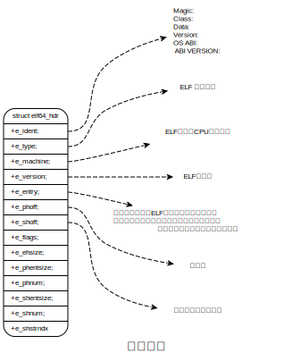
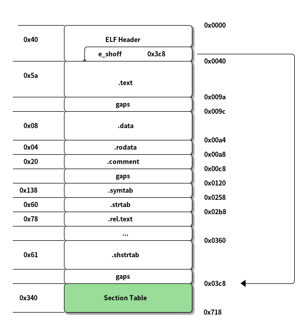
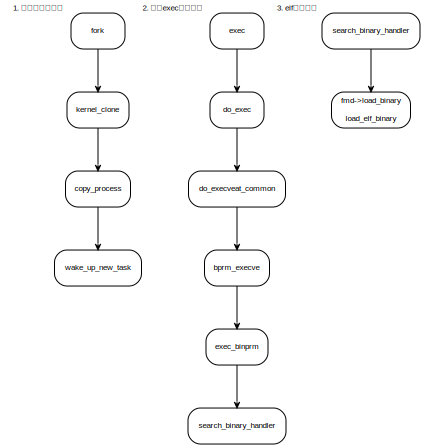
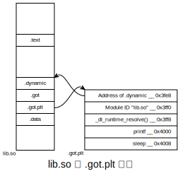

ELF文件、编译、链接
Table of Contents
调用惯例（Calling Convention）
1. ELF文件类型
| ELF文件类型 | 说明 | 实例 |
|---|---|---|
| 可重定位文件(Relocatable) | 包含代码和数据 | Linux的 .o 文件 |
| 可执行文件(Executable) | 可执行文件 | Linux程序bash mkdir… |
| 共享目标文件(Shared Object) | 包含代码和数据 | Linux的 .so 文件 |
| 核心转储文件(Core Dump) | 保存进程的地址空间内容 | Linux的coredump文件 |
2. 目标文件
- .text 代码段
- .data 已经初始化的全局变量和局部静态变量
- .bss 未初始化的全局变量和局部静态变量
- .rodata 只读数据（常量字符串，const变量）
- .comment 存放编译器版本信息
- .debug 调试信息
- .dynamic 动态链接信息
- .hash 符号hash表
- .line 调试的行号
- .note 额外的编译信息（例如公司名、版本号）
- .strtab String Table字符串表
- .symtab Symbol Table符号表
- .shstrtab Section String Table段名称表
- .plt/.got 动态链接的跳转表和全局入口表
- .init/.fini 程序构造和析构代码段
可以自定义段名，但是自定义的段名不建议使用 ‘.’ 开头，容易和系统保留段名冲突。
命名方式：
__attribute__((section("FOO"))) int global = 42; __attribute__((section("BAR"))) void foo() {}
指令和数据分开存放优势：
- 数据和指令会被加载到不同的内存区域，可以很容易的对内存区域的读、写、执行属性进行管理。
- CPU有数据缓存（D-Cache）和指令缓存（I-Cache），分开有利于提高命中率
- 当系统运行该程序的多个副本时，由于其指令部分都相同，所以内存中指令部分只需要保存一份。
/** * SimpleSection.c * * Linux: * gcc -c SimpleSection.c * * Windows: * cl SimpleSection.c /c /Za */ int printf( const char* format, ... ); int global_init_var = 84; int global_uninit_var; void func1( int i ) { printf( "%d\n", i ); } int main(void) { static int static_var = 85; static int static_var2; int a = 1; int b; func1( static_var + static_var2 + a + b ); return a; }
$ objdump -w -h SimpleSection.o SimpleSection.o: file format elf64-x86-64 Sections: Idx Name Size VMA LMA File off Algn Flags 0 .text 0000005a 0000000000000000 0000000000000000 00000040 2**0 CONTENTS, ALLOC, LOAD, RELOC, READONLY, CODE 1 .data 00000008 0000000000000000 0000000000000000 0000009c 2**2 CONTENTS, ALLOC, LOAD, DATA 2 .bss 00000008 0000000000000000 0000000000000000 000000a4 2**2 ALLOC 3 .rodata 00000004 0000000000000000 0000000000000000 000000a4 2**0 CONTENTS, ALLOC, LOAD, READONLY, DATA 4 .comment 00000020 0000000000000000 0000000000000000 000000a8 2**0 CONTENTS, READONLY 5 .note.GNU-stack 00000000 0000000000000000 0000000000000000 000000c8 2**0 CONTENTS, READONLY 6 .eh_frame 00000058 0000000000000000 0000000000000000 000000c8 2**3 CONTENTS, ALLOC, LOAD, RELOC, READONLY, DATA
部分段的信息：
| 段 | 偏移 | 大小 |
|---|---|---|
| ELF header | 0 | 0x40 (64bytes) |
| .text | 0x40 | 0x5a |
| .data | 0x9c | 0x08 |
| .bss | 0xa4 | 0x08 |
| .rodata | 0xa4 | 0x04 |
| .comment | 0xa8 | 0x20 |
| … |
size 命令可以查看elf文件的代码段、数据段、bss段。
$ size SimpleSection.o text data bss dec hex filename 182 8 8 198 c6 SimpleSection.o
2.1. ELF文件结构
2.1.1. 文件头
typedef struct elf64_hdr { unsigned char e_ident[EI_NIDENT]; /* ELF "magic number" */ Elf64_Half e_type; Elf64_Half e_machine; Elf64_Word e_version; Elf64_Addr e_entry; /* Entry point virtual address */ Elf64_Off e_phoff; /* Program header table file offset */ Elf64_Off e_shoff; /* Section header table file offset */ Elf64_Word e_flags; Elf64_Half e_ehsize; Elf64_Half e_phentsize; Elf64_Half e_phnum; Elf64_Half e_shentsize; Elf64_Half e_shnum; Elf64_Half e_shstrndx; } Elf64_Ehdr;

$ readelf -W -h SimpleSection.o ELF Header: Magic: 7f 45 4c 46 02 01 01 00 00 00 00 00 00 00 00 00 Class: ELF64 Data: 2's complement, little endian Version: 1 (current) OS/ABI: UNIX - System V ABI Version: 0 Type: REL (Relocatable file) Machine: Advanced Micro Devices X86-64 Version: 0x1 Entry point address: 0x0 Start of program headers: 0 (bytes into file) Start of section headers: 968 (bytes into file) Flags: 0x0 Size of this header: 64 (bytes) Size of program headers: 0 (bytes) Number of program headers: 0 Size of section headers: 64 (bytes) Number of section headers: 13 Section header string table index: 12 ~/tmp/zwxy $
文件类型：
| 类型 | 值 | 含义 |
|---|---|---|
| ET_REL | 1 | 可重定位 |
| ET_EXEC | 2 | 可执行文件 |
| ET_DYN | 3 | 共享目标文件（动态库） |
| ET_CORE | 4 | |
| ET_LOPROC | 0xff00 | |
| ET_HIPROC | 0xffff |
2.1.2. 段表
$ readelf -W -S SimpleSection.o There are 13 section headers, starting at offset 0x3c8: Section Headers: [Nr] Name Type Address Off Size ES Flg Lk Inf Al [ 0] NULL 0000000000000000 000000 000000 00 0 0 0 [ 1] .text PROGBITS 0000000000000000 000040 00005a 00 AX 0 0 1 [ 2] .rela.text RELA 0000000000000000 0002b8 000078 18 I 10 1 8 [ 3] .data PROGBITS 0000000000000000 00009c 000008 00 WA 0 0 4 [ 4] .bss NOBITS 0000000000000000 0000a4 000008 00 WA 0 0 4 [ 5] .rodata PROGBITS 0000000000000000 0000a4 000004 00 A 0 0 1 [ 6] .comment PROGBITS 0000000000000000 0000a8 000020 01 MS 0 0 1 [ 7] .note.GNU-stack PROGBITS 0000000000000000 0000c8 000000 00 0 0 1 [ 8] .eh_frame PROGBITS 0000000000000000 0000c8 000058 00 A 0 0 8 [ 9] .rela.eh_frame RELA 0000000000000000 000330 000030 18 I 10 8 8 [10] .symtab SYMTAB 0000000000000000 000120 000138 18 11 8 8 [11] .strtab STRTAB 0000000000000000 000258 000060 00 0 0 1 [12] .shstrtab STRTAB 0000000000000000 000360 000061 00 0 0 1 Key to Flags: W (write), A (alloc), X (execute), M (merge), S (strings), I (info), L (link order), O (extra OS processing required), G (group), T (TLS), C (compressed), x (unknown), o (OS specific), E (exclude), D (mbind), l (large), p (processor specific)

段表是一个 Elf64_Shdr 结构的数组，每个结构对应一个段。对于上述的SimpleSection.o来说，段表起始位置 0x3c8 （ Start of section headers: 968 (bytes into file) ）， 每个段描述符结构大小 0x40（Elf64_Shdr Size of this header: 64 (bytes) ）， 段的数量 13 （ Number of section headers: 13 ）。由此可以得出段表长度 64*13 = 0x340。
Start of section headers: 968 (bytes into file) Flags: 0x0 Size of this header: 64 (bytes) Size of program headers: 0 (bytes) Number of program headers: 0 Size of section headers: 64 (bytes) Number of section headers: 13 Section header string table index: 12
typedef struct elf64_shdr { /** 段名，标识在 .shstrtab 的字符串表的下标 */ Elf64_Word sh_name; /* Section name, index in string tbl */ Elf64_Word sh_type; /* Type of section */ Elf64_Xword sh_flags; /* Miscellaneous section attributes */ /** 段的虚拟地址 */ Elf64_Addr sh_addr; /* Section virtual addr at execution */ /** 段的偏移，如果段在文件中，表示在文件中的偏移，否则无意义 */ Elf64_Off sh_offset; /* Section file offset */ Elf64_Xword sh_size; /* Size of section in bytes */ Elf64_Word sh_link; /* Index of another section */ Elf64_Word sh_info; /* Additional section information */ Elf64_Xword sh_addralign; /* Section alignment */ /** 有些段包含了一些固定大小的项，比如符号表，其包含的每个符号所占大小都一样。 对于这种段，sh_entsize表示每个项的大小。如果为0，则表示该段不包含固定大小的项。 */ Elf64_Xword sh_entsize; /* Entry size if section holds table */ } Elf64_Shdr;
段的类型：
| 类型定义 | 值 | 含义 |
|---|---|---|
| SHT_NULL | 0 | 无效段 |
| SHT_PROGBI | 1 | 程序段（代码段、数据段） |
| SHT_SYMTAB | 2 | 该段内容是符号表 |
| SHT_STRTAB | 3 | 字符串表 |
| SHT_RELA | 4 | 重定位表，该段包含了重定位信息 |
| SHT_HASH | 5 | 符号表的hash表 |
| SHT_DYNAMI | 6 | 动态链接信息 |
| SHT_NOTE | 7 | 提示性信息 |
| SHT_NOBITS | 8 | 表示该段在文件中没有内容 |
| SHT_REL | 9 | 该段包含了重定位信息 |
| SHT_SHLIB | 10 | 保留 |
| SHT_DYNSYM | 11 | 动态链接符号表 |
| SHT_NUM | 12 | |
| SHT_LOPROC | 0x70000000 | |
| SHT_HIPROC | 0x7fffffff | |
| SHT_LOUSER | 0x80000000 | |
| SHT_HIUSER | 0xffffffff |
段的标志：
| 标志定义 | 值 | 含义 |
|---|---|---|
| SHF_WRITE | 0x1 | 该段在进程中可写 |
| SHF_ALLOC | 0x2 | 表示该段在进程空间中需要分配空间 |
| SHF_EXECINSTR | 0x4 | 表示该段在进程空间中可执行（代码段） |
| SHF_RELA_LIVEPATCH | 0x00100000 | |
| SHF_RO_AFTER_INIT | 0x00200000 | |
| SHF_MASKPROC | 0xf0000000 |
系统保留段的属性：
| 段名 | 类型 | 标志 |
|---|---|---|
| .bss | SHT_NOBITS | SHF_ALLOC + SHF_WRITE |
| .comment | SHT_PROGBITS | none |
| .data | SHT_PROGBITS | SHF_ALLOC + SHF_WRITE |
| .data1 | SHT_PROGBITS | SHF_ALLOC + SHF_WRITE |
| .debug | SHT_PROGBITS | none |
| .dynamic | SHT_DYNAMIC | SHF_ALLOC + SHF_WRITE |
| .hash | SHT_HASH | SHF_ALLOC |
| .line | SHT_PROGBITS | node |
| .note | SHT_NOTE | none |
| .rodata | SHT_PROGBITS | SHF_ALLOC |
| .rodata1 | SHT_PROGBITS | SHF_ALLOC |
| .shstrtab | SHT_STRTAB | none |
| .strtab | SHT_STRTAB | 如果该ELF文件有可装载的段要用到该字符串表，则该字符串表也将被装载到进程空间，则会设置SHF_ALLOC标志 |
| .symtab | SHT_SYMTAB | 同上 |
| .text | SHT_PROGBITS | SHF_ALLOC + SHF_EXECINTSTR |
段的链接信息（sh_link、sh_info）：只有段的类型是和链接相关时，该成员才有意义。
| sh_type | sh_link | sh_info |
|---|---|---|
| SHT_DYNAMIC | 该段所使用的字符串表在段表中的下标 | 0 |
| SHT_HASH | 该段所使用的符号表在段表中的下标 | 0 |
| SHT_REL | 该段所使用的相应符号表在段表中的下标 | 该重定位表所作用的段在段表的下标 |
| SHT_RELA | 该段所使用的相应符号表在段表中的下标 | 该重定位表所作用的段在段表的下标 |
| SHT_SYMTAB | 操作系统相关 | 操作系统相关 |
| SHT_DYNSYM | 操作系统相关 | 操作系统相关 |
| other | SHN_UNDEF | 0 |
2.1.3. 重定位表
例如 .rel.text 就是重定位表，是针对 .text 段的重定位表。
2.1.4. 字符串表
.strtab 是字符串表
.shstrtab 是段表字符串表
2.2. 符号
函数和变量统称为符号，函数名和变量名统称为符号名。
2.2.1. 符号表结构
.symtab 就是一个符号表，其中包含的是 Elf64_Sym 结构的数组。
typedef struct elf64_sym { /** 符号名，标识该符号名在字符串表中的下标 */ Elf64_Word st_name; /* Symbol name, index in string tbl */ /** 符号类型和绑定信息 */ unsigned char st_info; /* Type and binding attributes */ unsigned char st_other; /* No defined meaning, 0 */ Elf64_Half st_shndx; /* Associated section index */ /** 符号值，值与符号有关，可能是绝对值，也可能是相对值*/ Elf64_Addr st_value; /* Value of the symbol */ /** 符号大小，对于包含数据的符号，代表数据类型的大小。 为0表示大小是0或者未知*/ Elf64_Xword st_size; /* Associated symbol size */ } Elf64_Sym;
符号绑定信息：
| 定义 | 值 | 说明 |
|---|---|---|
| STB_LOCAL | 0 | 局部符号，目标文件外部不可见 |
| STB_GLOBAL | 1 | 全局符号 |
| STB_WEAK | 2 | 弱引用 |
符号类型：
| 定义 | 值 | 说明 |
|---|---|---|
| STT_NOTYPE | 0 | 未知类型符号 |
| STT_OBJECT | 1 | 符号是数据对象，如变量、数组 |
| STT_FUNC | 2 | 符号是个函数或者其他可执行代码 |
| STT_SECTION | 3 | 该符号表示一个段，这种符号必须是STB_LOCAL的 |
| STT_FILE | 4 | 该符号表示文件名（一般是目标文件对应的源文件名） |
| STT_COMMON | 5 | |
| STT_TLS | 6 |
符号所在段：st_shndx 。 如果符号定义在本目标文件中，则此成员表示该符号所在段在段表中的下标；如果不是在本目标文件，或者对于特殊符号，sh_shndx值如下：
| 定义 | 值 | 说明 |
|---|---|---|
| SHN_UNDEF | 0 | 该符号未定义（符号在本目标文件被引用，定义在其他目标文件） |
| SHN_LORESERVE | 0xff00 | |
| SHN_LOPROC | 0xff00 | |
| SHN_HIPROC | 0xff1f | |
| SHN_LIVEPATCH | 0xff20 | |
| SHN_ABS | 0xfff1 | 该符号包含绝对的值，例如文件名的符号 |
| SHN_COMMON | 0xfff2 | 该符号是COMMON块类型的符号 |
| SHN_HIRESERVE | 0xffff |
- 符号值：st_value
- 是符号定义，且不是COMMON块类型，则表示符号在段内的偏移（sh_shndx指定的段），目标文件中定义的全局符号都是这种类型。
- 符号是COMMON块类型，则表示符号的对齐属性。
- 可执行文件中，表示符号的虚拟地址。
2.2.2. 弱符号和强符号
链接器处理规则：
- 不允许强符号被多次定义，否则报错（重复定义）
- 符号在某个目标文件为强符号，其他目标文件都是弱符号，则选择强符号
- 如果有多个弱符号同名，优先选择初始化的弱符号，否则选择占用空间最大的符号。此时编译需要加
-fcommon选项。
2.3. 调试信息
目标文件的一些段用来保存调试信息，可以通过strip去掉调试信息。
3. 静态链接
/* a.c */ extern int shared; int main() { int a = 100; swap(&a, &shared); }
/* b.c */ int shared = 1; void swap(int *a, int *b) { *a ^= *b ^= *a ^= *b; }
3.1. 空间和地址分配
多个目标文件合并时，有两种方式：按序叠加和相似段合并，现在的链接器一般采用相似段合并的方式。
链接器为目标文件分配地址和空间时，地址空间有两种含义： 一种是可执行文件中的地址空间，另一种是可执行文件被装载后的虚拟地址空间。在此只关注虚拟地址空间的分配。
链接分为两步：
- 第一步：空间与地址分配。 扫描所有的输入目标文件，获取其各个段的长度、属性、位置，并且将输入目标文件中的符号表中所有的符号定义和符号引用收集起来，统一放到一个全局符号表。这一步中，链接器将能够获得所有输入目标文件的段长度，并且将它们合并，计算出输出文件中各个段合并后的长度与位置，并建立映射关系。
- 第二步：符号解析与重定位。 使用上面第一步中收集到的所有信息，读取输入文件中段的数据、重定位信息，并且进行符号解析与重定位、调整代码中的地址等。事实上第二步是链接过程的核心，特别是重定位过程。
编译示例文件：
$ gcc -c a.c b.c
使用ld链接器进行链接（-e表示指定函数入口，-o表示链接输出文件）：
$ ld a.o b.o -e main -o ab
使用objdump查看：
~/tmp/zwxy $ objdump -w -h a.o a.o: file format elf64-x86-64 Sections: Idx Name Size VMA LMA File off Algn Flags 0 .text 00000031 0000000000000000 0000000000000000 00000040 2**0 CONTENTS, ALLOC, LOAD, RELOC, READONLY, CODE 1 .data 00000000 0000000000000000 0000000000000000 00000071 2**0 CONTENTS, ALLOC, LOAD, DATA 2 .bss 00000000 0000000000000000 0000000000000000 00000071 2**0 ALLOC 3 .comment 00000020 0000000000000000 0000000000000000 00000071 2**0 CONTENTS, READONLY 4 .note.GNU-stack 00000000 0000000000000000 0000000000000000 00000091 2**0 CONTENTS, READONLY 5 .eh_frame 00000038 0000000000000000 0000000000000000 00000098 2**3 CONTENTS, ALLOC, LOAD, RELOC, READONLY, DATA
~/tmp/zwxy $ objdump -w -h b.o b.o: file format elf64-x86-64 Sections: Idx Name Size VMA LMA File off Algn Flags 0 .text 0000004b 0000000000000000 0000000000000000 00000040 2**0 CONTENTS, ALLOC, LOAD, READONLY, CODE 1 .data 00000004 0000000000000000 0000000000000000 0000008c 2**2 CONTENTS, ALLOC, LOAD, DATA 2 .bss 00000000 0000000000000000 0000000000000000 00000090 2**0 ALLOC 3 .comment 00000020 0000000000000000 0000000000000000 00000090 2**0 CONTENTS, READONLY 4 .note.GNU-stack 00000000 0000000000000000 0000000000000000 000000b0 2**0 CONTENTS, READONLY 5 .eh_frame 00000038 0000000000000000 0000000000000000 000000b0 2**3 CONTENTS, ALLOC, LOAD, RELOC, READONLY, DATA
~/tmp/zwxy $ objdump -w -h ab ab: file format elf64-x86-64 Sections: Idx Name Size VMA LMA File off Algn Flags 0 .text 0000007c 0000000000401000 0000000000401000 00001000 2**0 CONTENTS, ALLOC, LOAD, READONLY, CODE 1 .eh_frame 00000058 0000000000402000 0000000000402000 00002000 2**3 CONTENTS, ALLOC, LOAD, READONLY, DATA 2 .data 00000004 0000000000403000 0000000000403000 00003000 2**2 CONTENTS, ALLOC, LOAD, DATA 3 .comment 0000001f 0000000000000000 0000000000000000 00003004 2**0 CONTENTS, READONLY ~/tmp/zwxy $
VMA（Virtual Memory Address）表示虚拟地址，LMA（Virtual Memory Address）表示加载地址，两个值一般相同。
在此我们只关注VMA。 链接之前VMA都是0，因为此时还未分配虚拟地址。链接后，ab中的各个段都分配了VMA。
3.1.1. 符号地址的确定
在链接第一步，扫描和空间分配阶段，链接器按照前面介绍的空间分配方法进行分配，这时候输入文件中的各个段在链接后的虚拟地址就已经确定了，比如 .text 段起始地址为 0x401000， .data 段的起始地址为 0x403000。
第一步完成后，链接器开始计算各个符号的虚拟地址，此时，所有符号在段内的偏移是固定的，所以此时 main、shared、swap的地址已经确定，但是还需要加上段（例如 .text）的起始偏移。
例如： main的段内偏移为0， 则 VMA = 0x401000(.text) + 0 = 0x401000。 swap的偏移为 0x31， 则VMA = 0x401000 + 0x31 = 0x401031。
~/tmp/zwxy $ objdump -w -t ab ab: file format elf64-x86-64 SYMBOL TABLE: 0000000000000000 l df *ABS* 0000000000000000 a.c 0000000000000000 l df *ABS* 0000000000000000 b.c 0000000000401031 g F .text 000000000000004b swap 0000000000403000 g O .data 0000000000000004 shared 0000000000403004 g .data 0000000000000000 __bss_start 0000000000401000 g F .text 0000000000000031 main 0000000000403004 g .data 0000000000000000 _edata 0000000000403008 g .data 0000000000000000 _end
| 符号 | 类型 | VMA |
|---|---|---|
| main | 函数 | 0x401000 |
| swap | 函数 | 0x401031 |
| shared | 变量 | 0x403000 |
3.2. 符号解析和重定位
3.2.1. 重定位
~/tmp/zwxy $ objdump -w -d a.o a.o: file format elf64-x86-64 Disassembly of section .text: 0000000000000000 <main>: 0: 55 push %rbp 1: 48 89 e5 mov %rsp,%rbp 4: 48 83 ec 10 sub $0x10,%rsp 8: c7 45 fc 64 00 00 00 movl $0x64,-0x4(%rbp) f: 48 8d 45 fc lea -0x4(%rbp),%rax 13: 48 8d 15 00 00 00 00 lea 0x0(%rip),%rdx # 1a <main+0x1a> 1a: 48 89 d6 mov %rdx,%rsi 1d: 48 89 c7 mov %rax,%rdi 20: b8 00 00 00 00 mov $0x0,%eax 25: e8 00 00 00 00 call 2a <main+0x2a> 2a: b8 00 00 00 00 mov $0x0,%eax 2f: c9 leave 30: c3 ret
objdump -r 可以用来查看重定位信息。
偏移 0x16 位置：是shared需要修正的位置
偏移 0x26 位置：是swap需要修正的位置
3.2.2. 重定位表
数据结构：
typedef struct elf64_rel { Elf64_Addr r_offset; /* Location at which to apply the action */ Elf64_Xword r_info; /* index and type of relocation */ } Elf64_Rel;
- Elf64_Rel
- r_offset
- 重定位入口偏移。对于可重定位文件，该值是所要修正位置的首字节相对于段起始位置的偏移；对于可执行文件或者共享对象文件，该值是所修正位置的首字节的虚拟地址
- r_info
- 重定位入口的类型和符号。低32位表示重定位入口类型，高32位表示重定位入口的符号在符号表中的下标。
查看重定位信息：
~/tmp/zwxy $ objdump -w -r a.o a.o: file format elf64-x86-64 RELOCATION RECORDS FOR [.text]: OFFSET TYPE VALUE 0000000000000016 R_X86_64_PC32 shared-0x0000000000000004 0000000000000026 R_X86_64_PLT32 swap-0x0000000000000004 RELOCATION RECORDS FOR [.eh_frame]: OFFSET TYPE VALUE 0000000000000020 R_X86_64_PC32 .text ~/tmp/zwxy $ objdump -w -r b.o b.o: file format elf64-x86-64 RELOCATION RECORDS FOR [.eh_frame]: OFFSET TYPE VALUE 0000000000000020 R_X86_64_PC32 .text
3.2.3. 符号解析
每个目标文件都可能定义一些符号，也可能引用到定义在其他目标文件的符号。重定位的过程中，每个重定位的入口都是对一个符号的引用，当链接器须要对某个符号的引用进行重定位时，就要确定这个符号的目标地址。链接器会去查找由所有输入目标文件的符号表组成的全局符号表，找到相应的符号后进行重定位。找不到时，链接器会输出符号未定义错误。
3.2.4. 指令修正方式
x86_64基本的重定位类型： R_X86_64_32 和 R_X86_64_PC32，这两种类型支持x86_64小型代码模型，该模型假设代码节和数据节的总大小不超过2GB，所以可以用32位PC相对地址来访问。
| 宏定义 | 值 | 重定位修正方法 |
|---|---|---|
| R_X86_64_32 | 10 | 绝对地址修正： S+A |
| R_X86_64_PC32 | 2 | 相对地址修正： S+A-P |
- S: 符号的实际地址，即由r_info的高32位指定的符号的实际地址
- A: 保存在被修正位置的值
- P: 被修正的位置（相对于段开始的偏移量或者虚拟地址），注意，该值可通过r_offset计算得到
可参考： CSAPP:链接
3.3. COMMON块
思考关于未初始化的全局变量的问题：在目标文件中，编译器为什么不直接把未初始化的全局变量也当作未初始化的局部静态变量一样处理，为它在BSS段分配空间，而是将其标记为一个COMMON类型的变量？
当编译器将一个编译单元编译成目标文件的时候，如果该编译单元包含了弱符号（未初始化的全局变量就是典型的弱符号），那么该弱符号最终所占空间的大小在此时是未知的，因为有可能其他编译单元中该符号所占的空间比本编译单元该符号所占的空间要大。所以编译器此时无法为该弱符号在BSS段分配空间，因为所需要空间的大小未知。但是链接器在链接过程中可以确定弱符号的大小，因为当链接器读取所有输入目标文件以后，任何一个弱符号的最终大小都可以确定了，所以它可以在最终输出文件的BSS段为其分配空间。所以总体来看，未初始化全局变量最终还是被放在BSS段的。
GCC的 “-fno-common”也允许我们把所有未初始化的全局变量不以COMMON块的形式处理，或者使用“__attribute__”扩展： int global __attribute__((nocommon));
3.4. C++相关问题
重复代码消除：
全局构造和析构：
C++和ABI：
3.5. 静态链接
使用gcc的 -verbose 参数可以打印出详细的编译链接过程。
链接过程主要分为三步：
- 通过cc1将源文件编译为临时的汇编文件
- 通过as程序将汇编文件汇编为目标文件
- collect2程序完成最后的链接过程（collect2可以看作ld链接器的包装）
3.6. BFD库
BFD库（Binary File Descriptor Library）的目标是希望通过一种统一的接口来处理不同的目标文件格式。BFD这个项目本身是binutils项目的一个子项目。BFD把目标文件抽象成一个统一的模型，比如在这个抽象的目标文件模型中，最开始有一个描述整个目标文件总体信息的“文件头”，就跟我们实际的ELF文件一样，文件头后面是一系列的段，每个段都有名字、属性和段的内容，同时还抽象了符号表、重定位表、字符串表等类似的概念，使得BFD库的程序只要通过操作这个抽象的目标文件模型就可以实现操作所有BFD支持的目标文件格式。
现在GCC（更具体地讲是GNU 汇编器GAS， GNU Assembler）、链接器ld、调试器GDB及binutils的其他工具都通过BFD库来处理目标文件，而不是直接操作目标文件。这样做最大的好处是将编译器和链接器本身同具体的目标文件格式隔离开来，一旦我们须要支持一种新的目标文件格式，只须要在BFD库里面添加一种格式就可以了，而不须要修改编译器和链接器。到目前为止，BFD库支持大约25种处理器平台，将近50种目标文件格式。
4. TODO 可执行文件的装载与进程（结合源码从内核分析）
elf文件格式的注册：
static struct linux_binfmt elf_format = { .module = THIS_MODULE, .load_binary = load_elf_binary, .load_shlib = load_elf_library, .core_dump = elf_core_dump, .min_coredump = ELF_EXEC_PAGESIZE, }; static int __init init_elf_binfmt(void) { register_binfmt(&elf_format); return 0; } core_initcall(init_elf_binfmt);
程序加载过程：

CONFIG_ARCH_MMAP_RND_BITS=28 256MB的随机范围
#define ELF_ET_DYN_BASE (mmap_is_ia32() ? 0x000400000UL : \ (DEFAULT_MAP_WINDOW / 3 * 2)) (1UL<<47 - PAGE_SIZE)/3*2 = 0x555555554aaa
4.1. elf一致性检查
root@kvm-lfsnand:~/tmp# readelf -We /usr/bin/readelf ELF Header: Magic: 7f 45 4c 46 02 01 01 00 00 00 00 00 00 00 00 00 Class: ELF64 Data: 2's complement, little endian Version: 1 (current) OS/ABI: UNIX - System V ABI Version: 0 Type: DYN (Position-Independent Executable file) Machine: Advanced Micro Devices X86-64 Version: 0x1 Entry point address: 0xc2f0 Start of program headers: 64 (bytes into file) Start of section headers: 2420328 (bytes into file) Flags: 0x0 Size of this header: 64 (bytes) Size of program headers: 56 (bytes) Number of program headers: 13 Size of section headers: 64 (bytes) Number of section headers: 40 Section header string table index: 39 ...
static int load_elf_binary(struct linux_binprm *bprm) { //... retval = -ENOEXEC; /** ELFMAG为elf魔数 "\177ELF" */ if (memcmp(elf_ex->e_ident, ELFMAG, SELFMAG) != 0) goto out; /** elf 类型 */ if (elf_ex->e_type != ET_EXEC && elf_ex->e_type != ET_DYN) goto out; if (!elf_check_arch(elf_ex)) goto out; if (elf_check_fdpic(elf_ex)) goto out; if (!bprm->file->f_op->mmap) goto out; //... }
4.2. 加载动态链接器
root@kvm-lfsnand:~/tmp# readelf -Wl /usr/bin/readelf
Elf file type is DYN (Position-Independent Executable file)
Entry point 0xc2f0
There are 13 program headers, starting at offset 64
Program Headers:
Type Offset VirtAddr PhysAddr FileSiz MemSiz Flg Align
PHDR 0x000040 0x0000000000000040 0x0000000000000040 0x0002d8 0x0002d8 R 0x8
INTERP 0x000318 0x0000000000000318 0x0000000000000318 0x00001c 0x00001c R 0x1
[Requesting program interpreter: /lib64/ld-linux-x86-64.so.2]
LOAD 0x000000 0x0000000000000000 0x0000000000000000 0x00a5d0 0x00a5d0 R 0x1000
LOAD 0x00b000 0x000000000000b000 0x000000000000b000 0x0712bd 0x0712bd R E 0x1000
LOAD 0x07d000 0x000000000007d000 0x000000000007d000 0x043764 0x043764 R 0x1000
LOAD 0x0c0970 0x00000000000c1970 0x00000000000c1970 0x005af0 0x0091e8 RW 0x1000
DYNAMIC 0x0c3d78 0x00000000000c4d78 0x00000000000c4d78 0x000220 0x000220 RW 0x8
NOTE 0x000338 0x0000000000000338 0x0000000000000338 0x000040 0x000040 R 0x8
NOTE 0x000378 0x0000000000000378 0x0000000000000378 0x000020 0x000020 R 0x4
GNU_PROPERTY 0x000338 0x0000000000000338 0x0000000000000338 0x000040 0x000040 R 0x8
GNU_EH_FRAME 0x0b8d04 0x00000000000b8d04 0x00000000000b8d04 0x000cf4 0x000cf4 R 0x4
GNU_STACK 0x000000 0x0000000000000000 0x0000000000000000 0x000000 0x000000 RW 0x10
GNU_RELRO 0x0c0970 0x00000000000c1970 0x00000000000c1970 0x003690 0x003690 R 0x1
Section to Segment mapping:
Segment Sections...
00
01 .interp
02 .interp .note.gnu.property .note.ABI-tag .hash .gnu.hash .dynsym .dynstr .gnu.version .gnu.version_r .rela.dyn .rela.plt
03 .init .plt .plt.got .text .fini
04 .rodata .eh_frame_hdr .eh_frame
05 .init_array .fini_array .data.rel.ro .dynamic .got .got.plt .data .bss
06 .dynamic
07 .note.gnu.property
08 .note.ABI-tag
09 .note.gnu.property
10 .eh_frame_hdr
11
12 .init_array .fini_array .data.rel.ro .dynamic .got
从程序的 program header 读取动态链接器路径，并执行加载。
static struct elf_phdr *load_elf_phdrs(const struct elfhdr *elf_ex, struct file *elf_file) { struct elf_phdr *elf_phdata = NULL; //... elf_phdata = kmalloc(size, GFP_KERNEL); /** 读取program header */ retval = elf_read(elf_file, elf_phdata, size, elf_ex->e_phoff); //... return elf_phdata; } static int load_elf_binary(struct linux_binprm *bprm) { //... /** 加载elf的program header*/ elf_phdata = load_elf_phdrs(elf_ex, bprm->file); elf_ppnt = elf_phdata; for (i = 0; i < elf_ex->e_phnum; i++, elf_ppnt++) { char *elf_interpreter; //... if (elf_ppnt->p_type != PT_INTERP) continue; //... /** 分配空间，用于存储动态链接器路径 */ elf_interpreter = kmalloc(elf_ppnt->p_filesz, GFP_KERNEL); /** 从可执行文件的program header读取动态加载器的路径 ”/lib64/ld-linux-x86-64.so.2“ */ retval = elf_read(bprm->file, elf_interpreter, elf_ppnt->p_filesz, elf_ppnt->p_offset); /** 打开动态加载器 */ interpreter = open_exec(elf_interpreter); interp_elf_ex = kmalloc(sizeof(*interp_elf_ex), GFP_KERNEL); /* 读取动态链接器的elf文件头 */ retval = elf_read(interpreter, interp_elf_ex, sizeof(*interp_elf_ex), 0); //... } /** 动态链接器的一般性检查 */ //... }
4.3. 初始化进程
static int load_elf_binary(struct linux_binprm *bprm) { //... /** 清理当前可执行程序的所有信息，准备初始化新进程 */ retval = begin_new_exec(bprm); /** 是否开启地址空间随机化 */ if (!(current->personality & ADDR_NO_RANDOMIZE) && randomize_va_space) current->flags |= PF_RANDOMIZE; /** 主要初始化进程地址空间布局 */ setup_new_exec(bprm); retval = setup_arg_pages(bprm, randomize_stack_top(STACK_TOP), executable_stack); elf_bss = 0; elf_brk = 0; start_code = ~0UL; end_code = 0; start_data = 0; end_data = 0; } void setup_new_exec(struct linux_binprm * bprm) { struct task_struct *me = current; /** 初始化地址空间布局 */ arch_pick_mmap_layout(me->mm, &bprm->rlim_stack); //... }
地址空间布局初始化：
static void arch_pick_mmap_base(unsigned long *base, unsigned long *legacy_base, unsigned long random_factor, unsigned long task_size, struct rlimit *rlim_stack) { *legacy_base = mmap_legacy_base(random_factor, task_size); if (mmap_is_legacy()) *base = *legacy_base; else *base = mmap_base(random_factor, task_size, rlim_stack); } void arch_pick_mmap_layout(struct mm_struct *mm, struct rlimit *rlim_stack) { if (mmap_is_legacy()) mm->get_unmapped_area = arch_get_unmapped_area; else /** 该内存布局下，内存映射自顶向下增长 */ mm->get_unmapped_area = arch_get_unmapped_area_topdown; /** 选择内存映射的基地址 */ arch_pick_mmap_base(&mm->mmap_base, &mm->mmap_legacy_base, arch_rnd(mmap64_rnd_bits), task_size_64bit(0), rlim_stack); //... }
初始化栈空间：
static int load_elf_binary(struct linux_binprm *bprm) { //...... /** 初始化stack对应的 vm_area_struct 结构 */ retval = setup_arg_pages(bprm, randomize_stack_top(STACK_TOP), executable_stack); elf_bss = 0; elf_brk = 0; start_code = ~0UL; end_code = 0; start_data = 0; end_data = 0; }
5. 动态链接
5.1. 为何要进行动态链接
- 内存和磁盘空间： 静态链接会极大的浪费内存空间和磁盘空间，进程之间会有很多重复的函数无法共享，多个程序文件也会包含重复的函数。
- 程序开发和发布：静态链接库更新后，程序需要重新链接。
动态链接的思想：将程序的模块互相分隔开来，形成独立的文件，不再将其静态链接，而是运行时再链接。
动态链接优势：
- 节省内存和磁盘，可以减少物理页面的换入换出，增加CPU缓存命中率
- 方便升级，无需重新链接，只需要覆盖旧的目标文件，重新启动程序就可以
- 有利于程序的可扩展性和兼容性
在Linux中，常用的C语言库的运行库glibc，它的动态链接形式为“libc.so”。当程序被装载的时候，系统的动态链接器会将程序所需要的所有动态链接库（最基本的就是libc.so）装载到进程的地址空间，并且将程序中所有未决议的符号绑定到相应的动态链接库中，并进行重定位工作。
程序与libc.so之间真正的链接工作是由动态链接器完成的，而非ld完成。动态链接会导致程序在性能的一些损失，但是对动态链接的链接过程可以进行优化，例如：延迟绑定（Lazy Binding）等方法，可以使得动态链接的性能损失尽可能地减小。
5.2. 动态链接示例
/** program1.c */ #include "lib.h" int main() { foobar(1); return 0; } /** program2.c */ #include "lib.h" int main() { foobar(2); return 0; } /** lib.c */ #include <stdio.h> void foobar(int i) { printf("Printing From Lib.so %d\n", i); sleep(-1); } /** lib.h */ #ifndef LIB_H #define LIB_H void foobar(int i); #endif
编译：
$ gcc -fPIC -shared -o lib.so lib.c $ gcc -o program1 program1.c ./lib.so $ gcc -o program2 program2.c ./lib.so
查看地址空间映射：
~/tmp/zwxy $ cat /proc/3233757/maps 562cd9c23000-562cd9c24000 r--p 00000000 103:06 3945858 /home/nandfan/tmp/zwxy/program1 562cd9c24000-562cd9c25000 r-xp 00001000 103:06 3945858 /home/nandfan/tmp/zwxy/program1 562cd9c25000-562cd9c26000 r--p 00002000 103:06 3945858 /home/nandfan/tmp/zwxy/program1 562cd9c26000-562cd9c27000 r--p 00002000 103:06 3945858 /home/nandfan/tmp/zwxy/program1 562cd9c27000-562cd9c28000 rw-p 00003000 103:06 3945858 /home/nandfan/tmp/zwxy/program1 562cda03f000-562cda060000 rw-p 00000000 00:00 0 [heap] 7f0b1f17a000-7f0b1f17d000 rw-p 00000000 00:00 0 7f0b1f17d000-7f0b1f1a3000 r--p 00000000 103:02 915190 /usr/lib/x86_64-linux-gnu/libc.so.6 7f0b1f1a3000-7f0b1f2f8000 r-xp 00026000 103:02 915190 /usr/lib/x86_64-linux-gnu/libc.so.6 7f0b1f2f8000-7f0b1f34b000 r--p 0017b000 103:02 915190 /usr/lib/x86_64-linux-gnu/libc.so.6 7f0b1f34b000-7f0b1f34f000 r--p 001ce000 103:02 915190 /usr/lib/x86_64-linux-gnu/libc.so.6 7f0b1f34f000-7f0b1f351000 rw-p 001d2000 103:02 915190 /usr/lib/x86_64-linux-gnu/libc.so.6 7f0b1f351000-7f0b1f35e000 rw-p 00000000 00:00 0 7f0b1f37b000-7f0b1f37c000 r--p 00000000 103:06 3945853 /home/nandfan/tmp/zwxy/lib.so 7f0b1f37c000-7f0b1f37d000 r-xp 00001000 103:06 3945853 /home/nandfan/tmp/zwxy/lib.so 7f0b1f37d000-7f0b1f37e000 r--p 00002000 103:06 3945853 /home/nandfan/tmp/zwxy/lib.so 7f0b1f37e000-7f0b1f37f000 r--p 00002000 103:06 3945853 /home/nandfan/tmp/zwxy/lib.so 7f0b1f37f000-7f0b1f380000 rw-p 00003000 103:06 3945853 /home/nandfan/tmp/zwxy/lib.so 7f0b1f380000-7f0b1f382000 rw-p 00000000 00:00 0 7f0b1f382000-7f0b1f383000 r--p 00000000 103:02 915185 /usr/lib/x86_64-linux-gnu/ld-linux-x86-64.so.2 7f0b1f383000-7f0b1f3a8000 r-xp 00001000 103:02 915185 /usr/lib/x86_64-linux-gnu/ld-linux-x86-64.so.2 7f0b1f3a8000-7f0b1f3b2000 r--p 00026000 103:02 915185 /usr/lib/x86_64-linux-gnu/ld-linux-x86-64.so.2 7f0b1f3b2000-7f0b1f3b4000 r--p 00030000 103:02 915185 /usr/lib/x86_64-linux-gnu/ld-linux-x86-64.so.2 7f0b1f3b4000-7f0b1f3b6000 rw-p 00032000 103:02 915185 /usr/lib/x86_64-linux-gnu/ld-linux-x86-64.so.2 7fffc41c5000-7fffc41e6000 rw-p 00000000 00:00 0 [stack] 7fffc41ed000-7fffc41f1000 r--p 00000000 00:00 0 [vvar] 7fffc41f1000-7fffc41f3000 r-xp 00000000 00:00 0 [vdso]
/usr/lib/x86_64-linux-gnu/ld-linux-x86-64.so.2 是动态链接器。在开始运行program1之前，系统先把控制权交给动态链接器，有动态链接器完成所有动态链接工作后，再将控制权交回program1，然后开始执行。
使用 readelf 查看lib.so的装载属性：
~/tmp/zwxy $ readelf -W -l lib.so Elf file type is DYN (Shared object file) Entry point 0x0 There are 9 program headers, starting at offset 64 Program Headers: Type Offset VirtAddr PhysAddr FileSiz MemSiz Flg Align LOAD 0x000000 0x0000000000000000 0x0000000000000000 0x0004d0 0x0004d0 R 0x1000 LOAD 0x001000 0x0000000000001000 0x0000000000001000 0x000159 0x000159 R E 0x1000 LOAD 0x002000 0x0000000000002000 0x0000000000002000 0x0000bc 0x0000bc R 0x1000 LOAD 0x002df8 0x0000000000003df8 0x0000000000003df8 0x000220 0x000228 RW 0x1000 DYNAMIC 0x002e08 0x0000000000003e08 0x0000000000003e08 0x0001c0 0x0001c0 RW 0x8 NOTE 0x000238 0x0000000000000238 0x0000000000000238 0x000024 0x000024 R 0x4 GNU_EH_FRAME 0x00201c 0x000000000000201c 0x000000000000201c 0x000024 0x000024 R 0x4 GNU_STACK 0x000000 0x0000000000000000 0x0000000000000000 0x000000 0x000000 RW 0x10 GNU_RELRO 0x002df8 0x0000000000003df8 0x0000000000003df8 0x000208 0x000208 R 0x1 Section to Segment mapping: Segment Sections... 00 .note.gnu.build-id .gnu.hash .dynsym .dynstr .gnu.version .gnu.version_r .rela.dyn .rela.plt 01 .init .plt .plt.got .text .fini 02 .rodata .eh_frame_hdr .eh_frame 03 .init_array .fini_array .dynamic .got .got.plt .data .bss 04 .dynamic 05 .note.gnu.build-id 06 .eh_frame_hdr 07 08 .init_array .fini_array .dynamic .got
共享对象的最终装载地址在编译时是不确定的，而是在装载时，装载器根据当前地址空间的空闲情况，动态分配一块足够大小的虚拟地址空间给相应的共享对象。
5.3. 地址无关代码
5.3.1. 装载时重定位
类似静态链接中的重定位，在链接时，对所有绝对地址的引用不做重定位，而是吧这一步推迟到装载时在完成，一旦模块装载地址确定，即目标地址确定，那么系统就对程序中所有的绝对地址引用进行重定位。
装载时重定位无法解决共享的问题。 动态链接模块被装载映射至虚拟空间后，指令部分是在多个进程之间共享的，由于装载时重定位的方法需要修改指令，所以没有办法做到同一份指令被多个进程共享，因为指令被重定位后对于每个进程来讲是不同的。当然，动态连接库中的可修改数据部分对于不同的进程来说有多个副本，所以它们可以采用装载时重定位的方法来解决。
Linux和GCC支持装载时重定位的方法，我们在编译共享库时，使用了两个参数： -shared 和 -fPIC ，如果只使用 --shared 那么输出的共享对象就是使用装载时重定位的方式。
5.3.2. 地址无关代码
PIC（Position-independent Code）地址无关代码： 将模块中需要被修改的部分分离出来，跟数据部分放在一起，这样可以保证指令部分无需改变，数据部分在每个进程中拥有自己的副本。
共享对象模块中按照是否跨模块分为两类：模块内部引用和模块外部引用。
按照不同引用方式又可以分为：指令引用和数据访问。
由此可以得到4中情况：
- 模块内部函数调用、跳转
- 模块内部的数据访问，例如模块内定义的全局变量、静态变量
- 模块外部函数调用、跳转
- 模块外部的数据访问，例如其他模块定义的全局变量
/** pic.c */ static int a; extern int b; extern void ext(); //static int *p = &a; void bar() { a = 1; b = 2; (void)p; } void foo() { bar(); ext(); }
5.3.2.1. TODO 模块内部函数调用
PLT(（Procedure Linkage Table，PLT）)过程链接表。
PLT是一个数组，其中每个条目是16字节代码。PLT[0]是个特殊条目。每个函数都有它自己的PLT条目。每个条目负责调用一个具体的函数。从PLT[1]开始的条目调用用户代码调用的函数。
Disassembly of section .plt: 0000000000001020 <ext@plt-0x10>: 1020: ff 35 ca 2f 00 00 push 0x2fca(%rip) # 3ff0 <_GLOBAL_OFFSET_TABLE_+0x8> 1026: ff 25 cc 2f 00 00 jmp *0x2fcc(%rip) # 3ff8 <_GLOBAL_OFFSET_TABLE_+0x10> 102c: 0f 1f 40 00 nopl 0x0(%rax) 0000000000001030 <ext@plt>: 1030: ff 25 ca 2f 00 00 jmp *0x2fca(%rip) # 4000 <ext> 1036: 68 00 00 00 00 push $0x0 103b: e9 e0 ff ff ff jmp 1020 <_init+0x20> 0000000000001040 <bar@plt>: 1040: ff 25 c2 2f 00 00 jmp *0x2fc2(%rip) # 4008 <bar+0x2eef> 1046: 68 01 00 00 00 push $0x1 104b: e9 d0 ff ff ff jmp 1020 <_init+0x20> ...... 0000000000001119 <bar>: 1119: 55 push %rbp 111a: 48 89 e5 mov %rsp,%rbp 111d: c7 05 f5 2e 00 00 01 movl $0x1,0x2ef5(%rip) # 401c <a> 1124: 00 00 00 1127: 48 8b 05 92 2e 00 00 mov 0x2e92(%rip),%rax # 3fc0 <b> 112e: c7 00 02 00 00 00 movl $0x2,(%rax) 1134: 90 nop 1135: 5d pop %rbp 1136: c3 ret 0000000000001137 <foo>: 1137: 55 push %rbp 1138: 48 89 e5 mov %rsp,%rbp 113b: b8 00 00 00 00 mov $0x0,%eax 1140: e8 fb fe ff ff call 1040 <bar@plt> 1145: b8 00 00 00 00 mov $0x0,%eax 114a: e8 e1 fe ff ff call 1030 <ext@plt> 114f: 90 nop 1150: 5d pop %rbp 1151: c3 ret
5.3.2.2. 模块内部数据访问
《Intel® 64 and IA-32 Architectures Software Developer’s Manual Combined Volumes: 1, 2A, 2B, 2C, 2D, 3A, 3B, 3C, 3D, and 4》：volume 2 section 2.2.1.6 RIP-Relative Addressing 描述了RIP相对寻址。
RIP 寄存器的相对寻址：下一条指令的64位RIP地址 + 偏移 = 目标地址
RIP 相对寻址允许特定的 ModR/M 模式使用带符号的 32 位偏移。相当于提供了相对于 RIP ±2GB 的偏移范围。
64位程序，全局变量的寻址一般使用RIP相对寻址方式。
首先，指令中不可以包含数据的绝对地址，唯一的方法就是相对寻址。我们分析下变量a的地址寻址过程。
0000000000001119 <bar>: 1119: 55 push %rbp 111a: 48 89 e5 mov %rsp,%rbp 111d: c7 05 f5 2e 00 00 01 00 00 00 movl $0x1,0x2ef5(%rip) # 401c <a> 1127: 48 8b 05 92 2e 00 00 mov 0x2e92(%rip),%rax # 3fc0 <b> 112e: c7 00 02 00 00 00 movl $0x2p,(%rax) 1134: 90 nop 1135: 5d pop %rbp 1136: c3 ret
此处使用RIP相对寻址：
- 下一条指令地址：0x1127
- 偏移：0x2ef5
- 目标地址： 0x1127+0x2ef5 = 0x401c
0x401c位置位于 .bss 节中：
Disassembly of section .bss: 0000000000004018 <completed.0>: 4018: 00 00 add %al,(%rax) ... 000000000000401c <a>: 401c: 00 00 add %al,(%rax) ...
我们在看一下 .bss 节的信息：
~/tmp/zwxy $ objdump -wh pic.so pic.so: file format elf64-x86-64 Sections: Idx Name Size VMA LMA File off Algn Flags 0 .note.gnu.build-id 00000024 0000000000000238 0000000000000238 00000238 2**2 CONTENTS, ALLOC, LOAD, READONLY, DATA ...... 16 .got 00000028 0000000000003fc0 0000000000003fc0 00002fc0 2**3 CONTENTS, ALLOC, LOAD, DATA 17 .got.plt 00000028 0000000000003fe8 0000000000003fe8 00002fe8 2**3 CONTENTS, ALLOC, LOAD, DATA 18 .data 00000008 0000000000004010 0000000000004010 00003010 2**3 CONTENTS, ALLOC, LOAD, DATA 19 .bss 00000008 0000000000004018 0000000000004018 00003018 2**2 ALLOC 20 .comment 0000001f 0000000000000000 0000000000000000 00003018 2**0 CONTENTS, READONLY
.bss 节起始位置：0x4018，大小8字节，变量b位于0x401c，到结束位置0x4020正好4字节（变量b类型为int）。
5.3.2.3. 模块间数据访问
模块间的数据访问比模块内部稍微麻烦点，因为模块间的数据访问，其目标地址要等到装载时才决定，比如上面例子中的变量b，它被定义在其他模块中，并且该地址在装载时才能确定。
要使得代码地址无关，基本的思想就是把跟地址相关的部分放到数据段里面，很明显，这些其他模块的全局变量的地址是跟模块装载地址有关的。ELF的做法是在数据段里面建立一个指向这些变量的指针数组，也被称为全局偏移表（Global Offset Table，GOT），当代码需要引用该全局变量时，可以通过GOT中相对应项的间接引用。
.got中，每个变量都对应一个8个字节的地址，链接器在装载模块的时候会查找每个变量所在的地址，然后填充GOT中的对应项，以确保每个指针所指向的地址正确。由于GOT本身是放在数据段，所以它可以在模块装载时被修改，并且每个进程都可以有独立的副本，相互不受影响。
模块在编译时可以确定模块内部变量相对与当前指令的偏移，那么编译时就可以确定GOT相对于当前指令的偏移，由此可以知道.got中的项相对于当前指令的偏移，通过 RIP相对寻址 ，可以直接获取变量地址，示例中函数bar()的反汇编代码：
0000000000001119 <bar>: 1119: 55 push %rbp 111a: 48 89 e5 mov %rsp,%rbp 111d: c7 05 f5 2e 00 00 01 00 00 00 movl $0x1,0x2ef5(%rip) # 401c <a> 1127: 48 8b 05 92 2e 00 00 mov 0x2e92(%rip),%rax # 3fc0 <b> 112e: c7 00 02 00 00 00 movl $0x2p,(%rax) 1134: 90 nop 1135: 5d pop %rbp 1136: c3 ret
计算变量b的地址：
- 下一条指令的地址为：0x112e
- 变量b相对偏移： 0x2e92
- 变量b的地址： 0x112e+0x2e92 = 0x3fc0
通过读取库的重定位项，可以看到变量b相对于起始位置的偏移： 0x3fc0
~/tmp/zwxy $ objdump -R pic.so pic.so: file format elf64-x86-64 DYNAMIC RELOCATION RECORDS OFFSET TYPE VALUE ...... 0000000000003fc0 R_X86_64_GLOB_DAT b ...... 0000000000004000 R_X86_64_JUMP_SLOT ext 0000000000004008 R_X86_64_JUMP_SLOT bar
.got 节的偏移：0x3fc0，说明变量b在.got的起始位置。
~/tmp/zwxy $ objdump -h pic.so
......
16 .got 00000028 0000000000003fc0 0000000000003fc0 00002fc0 2**3
CONTENTS, ALLOC, LOAD, DATA
5.3.2.4. TODO 模块间调用、跳转
？？？？？？？？对于模块间调用和跳转，我们也可以采用上面类型四的方法来解决。与上面的类型有所不同的是，GOT中相应的项保存的是目标函数的地址，当模块需要调用目标函数时，可以通过GOT中的项进行间接跳转。？？？？？？
5.3.3. 数据段的地址无关性
通过上面的方法，我们能够保证共享对象中的代码部分地址无关，但是数据部分也有绝对地址引用的问题。例如：
static int a; static int* p = &a;
指针p就是一个绝对地址，它指向变量a，而变量a的地址会随着共享对象的装载地址改变而改变。
对于数据段来说，它在每个进程都有一份独立的副本，所以并不担心被进程改变。从这点来看，我们可以选择装载时重定位的方法来解决数据段中绝对地址引用问题。
对于共享对象来说，如果数据段中有绝对地址引用，那么编译器和链接器就会产生一个重定位表，这个重定位表里面包含了 "R_X86_64_RELATIVE" 类型的重定位入口，用于解决上述问题。当动态链接器装载共享对象时，如果发现该共享对象有这样的重定位入口，那么动态链接器就会对该共享对象进行重定位。
~/tmp/zwxy $ objdump -R ./pic.so DYNAMIC RELOCATION RECORDS OFFSET TYPE VALUE ...... 0000000000004020 R_X86_64_RELATIVE *ABS*+0x000000000000402c 0000000000003fc0 R_X86_64_GLOB_DAT _ITM_deregisterTMCloneTable@Base 0000000000003fc8 R_X86_64_GLOB_DAT b@Base
实际上，我们可以让代码段也使用这种装载时重定位的方法，而不使用地址无关代码。前面的例子中，在编译共享对象时使用了 "-fPIC" 参数，这个参数表示产生地址无关的代码段。如果不使用这个参数，产生的共享对象就不是 地址无关代码 ，也就是在装载时进行重定位。
这种方式编译的代码不是地址无关的，不能被多个进程共享。但是这种方式比 地址无关代码 运行速度快，因为省去了每次访问全局数据和函数时的地址计算以及间接寻址的过程。
5.4. 延迟绑定
在动态链接下，程序模块之间包含了大量的函数引用（全局变量往往比较少，因为大量的全局变量会导致模块之间耦合度变大），所以在程序开始执行前，动态链接会耗费不少时间用于解决模块之间的函数引用的符号查找以及重定位。
一般情况下，在一个程序运行过程中，可能很多函数在程序执行完时都不会被用到，比如一些错误处理函数或者是一些用户很少用到的功能模块等，如果一开始就把所有函数都链接好实际上是一种浪费。所以ELF采用了一种叫做延迟绑定（Lazy Binding）的做法，基本的思想就是当函数第一次被用到时才进行绑定（符号查找、重定位等），如果没有用到则不进行绑定。所以程序开始执行时，模块间的函数调用都没有进行绑定，而是需要用到时才由动态链接器来负责绑定。这样的做法可以加快程序的启动速度。
ELF使用PLT（Procedure Linkage Table）的方法来实现延迟绑定。（Glibc中通过 _dl_runtime_resolve 函数查找函数地址）。PLT为了实现延迟绑定，首先通过一个叫做PLT项的结构进行跳转。每个外部函数在PLT中都有一个相应的项，例如 bar() 函数称为 bar@plt。
Disassembly of section .plt: 0000000000001020 <ext@plt-0x10>: 1020: ff 35 ca 2f 00 00 push 0x2fca(%rip) # 3ff0 <_GLOBAL_OFFSET_TABLE_+0x8> 1026: ff 25 cc 2f 00 00 jmp *0x2fcc(%rip) # 3ff8 <_GLOBAL_OFFSET_TABLE_+0x10> 102c: 0f 1f 40 00 nopl 0x0(%rax) 0000000000001030 <ext@plt>: 1030: ff 25 ca 2f 00 00 jmp *0x2fca(%rip) # 4000 <ext> 1036: 68 00 00 00 00 push $0x0 103b: e9 e0 ff ff ff jmp 1020 <_init+0x20> 0000000000001040 <bar@plt>: 1040: ff 25 c2 2f 00 00 jmp *0x2fc2(%rip) # 4008 <bar+0x2eef> 1046: 68 01 00 00 00 push $0x1 104b: e9 d0 ff ff ff jmp 1020 <_init+0x20>
bar@plt 的三条指令的含义：
- 第一条指令是通过
.got.plt间接跳转的指令，jmp *0x2fc2(%rip) # 4008 <bar+0x2eef>也就是说bar地址保存在.got.plt项中（0x4008）。 - 初始时，
.got.plt中bar对应项的地址初始化为 bar@plt 中的第二条指令地址（0x1046），所以会直接执行第二条指令；第二条指令将参数压栈 （？？参数的含义，在.plt数组的下标？？？）。 - 第三条指令跳转到
.plt的第一项（0x1020）。
0x1020三条指令含义：
- 将
.got.plt的第二项（_GLOBAL_OFFSET_TABLE_+0x8）压栈，其中保存的本模块的ID。 - 跳转到
.got.plt第三项保存的地址，其中保存的是_dl_runtime_resolve的地址，用于完成地址的链接工作。
.got.plt 前三项含义：
- 第一项保存的是 ".dynamic" 段的地址，这个段描述了本模块动态链接相关的信息。
- 第二项保存的是本模块的ID。
- 第三项保存的是_dl_runtime_resolve()的地址。
.got.plt 其中第二项和第三项由动态链接器在装载共享模块的时候负责将它们初始化。 ".got.plt" 的其余项分别对应每个外部函数的引用。
PLT在ELF文件中以独立的段存放，节名通常叫做 .plt ，因为它本身是一些地址无关的代码，所以可以跟代码段等一起合并成同一个可读可执行的 Segment 被装载入内存。
5.5. 动态链接相关结构
动态链接时，操作系统会读取可执行文件的头部，从头部中的 "Program Header" 中读取每个 Segment" 的虚拟地址、文件地址和属性，并将它们映射到进程虚拟空间的相应位置。
在静态链接情况下，操作系统接着就可以把控制权转交给可执行文件的入口地址，然后程序开始执行，但是动态链接并非如此。
动态链接情况下，在装载完可执行文件之后，操作系统不能把控制权交给可执行文件。可执行文件依赖于很多共享对象，此时，可执行文件里对于很多外部符号的引用还处于无效地址的状态，即还没有跟相应的共享对象中的实际位置链接起来。所以在映射完可执行文件之后，操作系统会先启动一个动态链接器（Dynamic Linker）。
在Linux下，动态链接器为ld.so（既是共享对象，也是可执行程序）。操作系统同样通过映射的方式将它加载到进程的地址空间中。操作系统在加载完动态链接器之后，就将控制权交给动态链接器的入口地址（与可执行文件一样，共享对象也有入口地址）。当动态链接器得到控制权之后，它开始执行一系列自身的初始化操作，然后根据当前的环境参数，开始对可执行文件进行动态链接工作。当所有动态链接工作完成以后，动态链接器会将控制权转交到可执行文件的入口地址，程序开始正式执行。
5.5.1. .interp 节
.interp 的内容包含的就是字符串形式的动态链接器路径。
可以通过readelf查看依赖的动态链接器： readelf -l 程序名| grep interpreter
~/tmp/zwxy $ readelf -W -l program1
Elf file type is DYN (Position-Independent Executable file)
Entry point 0x1050
There are 13 program headers, starting at offset 64
Program Headers:
Type Offset VirtAddr PhysAddr FileSiz MemSiz Flg Align
PHDR 0x000040 0x0000000000000040 0x0000000000000040 0x0002d8 0x0002d8 R 0x8
INTERP 0x000318 0x0000000000000318 0x0000000000000318 0x00001c 0x00001c R 0x1
[Requesting program interpreter: /lib64/ld-linux-x86-64.so.2]
LOAD 0x000000 0x0000000000000000 0x0000000000000000 0x000620 0x000620 R 0x1000
LOAD 0x001000 0x0000000000001000 0x0000000000001000 0x000159 0x000159 R E 0x1000
LOAD 0x002000 0x0000000000002000 0x0000000000002000 0x0000dc 0x0000dc R 0x1000
LOAD 0x002dc0 0x0000000000003dc0 0x0000000000003dc0 0x000258 0x000260 RW 0x1000
DYNAMIC 0x002dd0 0x0000000000003dd0 0x0000000000003dd0 0x0001f0 0x0001f0 RW 0x8
NOTE 0x000338 0x0000000000000338 0x0000000000000338 0x000020 0x000020 R 0x8
NOTE 0x000358 0x0000000000000358 0x0000000000000358 0x000044 0x000044 R 0x4
GNU_PROPERTY 0x000338 0x0000000000000338 0x0000000000000338 0x000020 0x000020 R 0x8
GNU_EH_FRAME 0x002004 0x0000000000002004 0x0000000000002004 0x00002c 0x00002c R 0x4
GNU_STACK 0x000000 0x0000000000000000 0x0000000000000000 0x000000 0x000000 RW 0x10
GNU_RELRO 0x002dc0 0x0000000000003dc0 0x0000000000003dc0 0x000240 0x000240 R 0x1
Section to Segment mapping:
Segment Sections...
00
01 .interp
02 .interp .note.gnu.property .note.gnu.build-id .note.ABI-tag .gnu.hash .dynsym .dynstr .gnu.version .gnu.version_r .rela.dyn .rela.plt
03 .init .plt .plt.got .text .fini
04 .rodata .eh_frame_hdr .eh_frame
05 .init_array .fini_array .dynamic .got .got.plt .data .bss
06 .dynamic
07 .note.gnu.property
08 .note.gnu.build-id .note.ABI-tag
09 .note.gnu.property
10 .eh_frame_hdr
11
12 .init_array .fini_array .dynamic .got
在 "Program Header" 节中， INTERP段中保存的 “/lib64/ld-linux-x86-64.so.2”。
Linux下，操作系统在加载可执行文件时，会通过 “.interp”节指定的路径来获取动态链接器的路径。动态链接器属于Glibc的一部分，属于系统库级别的。
5.5.2. .dynamic节
.dynamic 节中保存了动态链接器所需要的基本信息，例如依赖哪些共享对象、动态链接符号表的位置、动态链接重定位表的位置、共享对象初始化代码的地址等。
.dynamic 节中保存的是 Elf64_Dyn 类型的数组：
typedef struct { Elf64_Sxword d_tag; /* entry tag value */ union { Elf64_Xword d_val; Elf64_Addr d_ptr; } d_un; } Elf64_Dyn;
* This is the info that is needed to parse the dynamic section of the file *
| d_tag的类型 | 类型值 | 对应d_un含义 |
|---|---|---|
| DT_NULL | 0 | 标识 .dynamic 节的结束位置 |
| DT_NEEDED | 1 | 依赖的共享对象文件，d_ptr：所依赖的共享对象文件名 |
| DT_PLTRELSZ | 2 | PLT重定位表的大小 |
| DT_PLTGOT | 3 | Processor defined value??? |
| DT_HASH | 4 | 动态链接hash表地址，d_ptr：.hash的地址 |
| DT_STRTAB | 5 | 动态链接字符串表的地址，d_ptr：.dynstr的地址 |
| DT_SYMTAB | 6 | 动态链接符号表的地址，d_ptr：.dynsym"的地址 |
| DT_RELA | 7 | 动态链接重定位表地址 |
| DT_RELASZ | 8 | 动态链接重定位表大小 |
| DT_RELAENT | 9 | 动态链接重定位表中表项大小 |
| DT_STRSZ | 10 | 动态链接字符串表大小，d_val表示大小 |
| DT_SYMENT | 11 | 动态链接符号表中表项的大小 |
| DT_INIT | 12 | 初始化代码地址 |
| DT_FINI | 13 | 析构代码地址 |
| DT_SONAME | 14 | 本共享对象的"SO-NAME" |
| DT_RPATH | 15 | 动态链接共享对象的搜索路径 |
| DT_SYMBOLIC | 16 | |
| DT_REL | 17 | 动态链接重定位表地址 |
| DT_RELSZ | 18 | 动态链接重定位表大小 |
| DT_RELENT | 19 | 动态链接重定位表中表项的大小 |
| DT_PLTREL | 20 | PLT中的重定位类型 |
| DT_DEBUG | 21 | |
| DT_TEXTREL | 22 | |
| DT_JMPREL | 23 | |
| DT_ENCODING | 32 |
可以通过 readelf -d 库名 查看 .dynamic 节的内容：
~/tmp/zwxy $ readelf -d ./lib.so Dynamic section at offset 0x2e08 contains 24 entries: Tag Type Name/Value 0x0000000000000001 (NEEDED) Shared library: [libc.so.6] 0x000000000000000c (INIT) 0x1000 0x000000000000000d (FINI) 0x1150 0x0000000000000019 (INIT_ARRAY) 0x3df8 0x000000000000001b (INIT_ARRAYSZ) 8 (bytes) 0x000000000000001a (FINI_ARRAY) 0x3e00 0x000000000000001c (FINI_ARRAYSZ) 8 (bytes) 0x000000006ffffef5 (GNU_HASH) 0x260 0x0000000000000005 (STRTAB) 0x348 0x0000000000000006 (SYMTAB) 0x288 0x000000000000000a (STRSZ) 127 (bytes) 0x000000000000000b (SYMENT) 24 (bytes) 0x0000000000000003 (PLTGOT) 0x3fe8 0x0000000000000002 (PLTRELSZ) 48 (bytes) 0x0000000000000014 (PLTREL) RELA 0x0000000000000017 (JMPREL) 0x4a0 0x0000000000000007 (RELA) 0x3f8 0x0000000000000008 (RELASZ) 168 (bytes) 0x0000000000000009 (RELAENT) 24 (bytes) 0x000000006ffffffe (VERNEED) 0x3d8 0x000000006fffffff (VERNEEDNUM) 1 0x000000006ffffff0 (VERSYM) 0x3c8 0x000000006ffffff9 (RELACOUNT) 3 0x0000000000000000 (NULL) 0x0
5.5.3. 动态符号表
动态符号表的节名 .dynsym （类似于静态链接中的 .symtab ），.dynsym中只保存了与动态链接相关的符号。
动态符号字符串表 .dynstr （类似于静态链接中的 .strtab ）。
5.5.4. 动态链接重定位表
共享对象需要重定位的主要原因是导入符号的存在。动态链接下，无论是可执行文件或共享对象，一旦它依赖于其他共享对象，也就是说有导入的符号时，那么它的代码或数据中就会有对于导入符号的引用。在编译时这些导入符号的地址未知，在静态链接中，这些未知的地址引用在最终链接时被修正。但是在动态链接中，导入符号的地址在运行时才确定，所以需要在运行时将这些导入符号的引用修正，即需要重定位。
对于动态链接来说，如果共享对象不是以PIC模式编译的，则需要装载时重定位。 但即使是使用PIC模式编译，在装载时也需要重定位，这是由于数据段中包含了绝对地址引用– 代码段中绝对地址相关的部分被分离了出来，变成了GOT，而GOT实际上是数据段的一部分。除了GOT以外，数据段还可能包含绝对地址引用 。
动态链接的文件中， .rel.dyn 和 .rel.plt (类似与静态链接的 .rel.text 和 .rel.data 。 .rel.dyn 是对数据引用的修正，所修正的位置位于 .got 以及数据段； .rel.plt 是对函数引用的修正，它所修正的位置位于 .got.plt 。
可以通过 readelf -r 来查看一个动态链接的文件的重定位表：
~/tmp/zwxy $ readelf -r ./lib.so Relocation section '.rela.dyn' at offset 0x3f8 contains 7 entries: Offset Info Type Sym. Value Sym. Name + Addend 000000003df8 000000000008 R_X86_64_RELATIVE 1110 000000003e00 000000000008 R_X86_64_RELATIVE 10d0 000000004010 000000000008 R_X86_64_RELATIVE 4010 000000003fc8 000100000006 R_X86_64_GLOB_DAT 0000000000000000 _ITM_deregisterTM[...] + 0 000000003fd0 000300000006 R_X86_64_GLOB_DAT 0000000000000000 __gmon_start__ + 0 000000003fd8 000400000006 R_X86_64_GLOB_DAT 0000000000000000 _ITM_registerTMCl[...] + 0 000000003fe0 000600000006 R_X86_64_GLOB_DAT 0000000000000000 __cxa_finalize@GLIBC_2.2.5 + 0 Relocation section '.rela.plt' at offset 0x4a0 contains 2 entries: Offset Info Type Sym. Value Sym. Name + Addend 000000004000 000200000007 R_X86_64_JUMP_SLO 0000000000000000 printf@GLIBC_2.2.5 + 0 000000004008 000500000007 R_X86_64_JUMP_SLO 0000000000000000 sleep@GLIBC_2.2.5 + 0
通过 readelf -S 查看.got.plt的偏移位置： 0x3fe8
~/tmp/zwxy $ readelf -WS ./lib.so There are 28 section headers, starting at offset 0x3540: Section Headers: [Nr] Name Type Address Off Size ES Flg Lk Inf Al ... [19] .dynamic DYNAMIC 0000000000003e08 002e08 0001c0 10 WA 4 0 8 [20] .got PROGBITS 0000000000003fc8 002fc8 000020 08 WA 0 0 8 [21] .got.plt PROGBITS 0000000000003fe8 002fe8 000028 08 WA 0 0 8 [22] .data PROGBITS 0000000000004010 003010 000008 00 WA 0 0 8 ...
R_X86_64_GLOB_DAT 和 R_X86_64_JUMP_SLO 类型的重定位入口的地址计算方法： 只需要将被修正的位置填入符号的地址即可。
- R_X86_64_GLOB_DAT 对 .got 的重定位
- R_X86_64_JUMP_SLO 对 .got.plt 的重定位
例如：上面的 printf 重定位入口，重定位类型R_X86_64_JUMP_SLO， .got.plt 的偏移为 0x3fe8 ， .got.plt 的前三项被系统占据，所以第四项的地址 = 0x3fe8 + 8 * 3 = 0x4000。

R_X86_64_RELATIVE 类型的重定位入口采用基址重置的方法，需要在装载时重定位。
5.5.5. 动态链接时进程堆栈初始化信息
操作系统把控制权交给动态链接器时，由动态链接器处理链接工作。动态链接器必须知道关于可执行文件和本进程的一些信息，比如可执行文件有几个段（“Segment”）、每个段的属性、程序的入口地址（因为动态链接器到时候需要把控制权交给可执行文件）等。这些信息往往由操作系统传递给动态链接器，保存在进程的堆栈里面。
进程初始化的时候，堆栈里面保存了关于进程执行环境和命令行参数等信息。事实上，堆栈里面还保存了动态链接器所需要的一些辅助信息数组（Auxiliary Vector）。辅助信息的格式也是一个结构数组，它的结构被定义在“elf.h”：
typedef struct { uint64_t a_type; /* Entry type */ union { uint64_t a_val; /* Integer value */ /* We use to have pointer elements added here. We cannot do that, though, since it does not work when using 32-bit definitions on 64-bit platforms and vice versa. */ } a_un; } Elf64_auxv_t; /* Legal values for a_type (entry type). */ #define AT_NULL 0 /* End of vector */ #define AT_IGNORE 1 /* Entry should be ignored */ #define AT_EXECFD 2 /* File descriptor of program */ #define AT_PHDR 3 /* Program headers for program */ #define AT_PHENT 4 /* Size of program header entry */ #define AT_PHNUM 5 /* Number of program headers */ #define AT_PAGESZ 6 /* System page size */ #define AT_BASE 7 /* Base address of interpreter */ #define AT_FLAGS 8 /* Flags */ #define AT_ENTRY 9 /* Entry point of program */ #define AT_NOTELF 10 /* Program is not ELF */ #define AT_UID 11 /* Real uid */ #define AT_EUID 12 /* Effective uid */ #define AT_GID 13 /* Real gid */ #define AT_EGID 14 /* Effective gid */ #define AT_CLKTCK 17 /* Frequency of times() */
常见的类型含义：
| 定义 | 值 | 含义 |
|---|---|---|
| AT_NULL | 0 | 标识辅助信息数组的结束 |
| AT_IGNORE | 1 | 标识忽略该Entry项 |
| AT_EXECFD | 2 | 可执行程序的文件描述符 |
| AT_PHDR | 3 | 可执行程序的Program headers |
| AT_PHENT | 4 | program header中每个entry大小 |
| AT_PHNUM | 5 | program headers中entry的数量 |
| AT_PAGESZ | 6 | 系统页面大小 |
| AT_BASE | 7 | 动态链接器（interpreter）的装载地址 |
| AT_FLAGS | 8 | Flags |
| AT_ENTRY | 9 | 可执行程序的入口地址 |
| AT_NOTELF | 10 | Program is not ELF |
| AT_UID | 11 | Real uid |
| AT_EUID | 12 | Effective uid |
| AT_GID | 13 | Real gid |
| AT_EGID | 14 | Effective gid |
| AT_CLKTCK | 17 | Frequency of times() |
动态链接器获取可执行文件相关信息有两种方式：
- 如果是读文件，则操作系统会初始化AT_EXECFD项。
- 如果文件映射的方式，则操作系统提供AT_PHENT、AT_PHNUM、AT_ENTRY这几项。
打印堆栈信息的小程序：
#include <stdio.h> #include <elf.h> int main(int argc, char* argv[]) { uint64_t * p = (int*)argv; int i; Elf64_auxv_t* aux; printf("Argument count: %d\n", *(p-1)); for(i = 0; i < *(p-1); ++i) { printf("Argument %d : %s\n", i, *(p + i) ); } p += i; p++; // skip 0 printf("Environment:\n"); while(*p) { printf("%s\n",*p); p++; } p++; // skip 0 printf("Auxiliary Vectors:\n"); aux = (Elf64_auxv_t*)p; while(aux->a_type != AT_NULL) { printf("Type: %02d Value: %x\n", aux->a_type, aux->a_un.a_val); aux++; } return 0; }
5.6. 动态链接的步骤和实现
动态链接的步骤大致分为3步：
- 启动动态链接器本身。
- 装载所有需要的共享对象。
- 重定位和初始化。
5.6.1. 动态链接器自举
对于普通共享对象文件来说，重定位工作由动态链接器来完成；它也可以依赖于其他共享对象，其中的被依赖的共享对象由动态链接器负责链接和装载。
对于动态链接器本身来说，不可以依赖于其他任何共享对象；其次是动态链接器本身所需要的全局和静态变量的重定位工作由它本身完成。对于第一个条件我们可以人为地控制，在编写动态链接器时保证不使用任何系统库、运行库；对于第二个条件，动态链接器必须在启动时有一段非常精巧的代码可以完成这项艰巨的工作而同时又不能用到全局和静态变量。这种具有一定限制条件的启动代码往往被称为自举（Bootstrap）。
动态链接器的入口地址就是自举代码的入口，当操作系统将进程控制权交给动态链接器时，动态链接器的自举代码即开始执行。自举代码首先会找到它自己的GOT。而GOT的第一个入口保存的即是“.dynamic”段的偏移地址，由此找到了动态连接器本身的“.dynamic”段。通过“.dynamic”中的信息，自举代码便可以获得动态链接器本身的重定位表和符号表等，从而得到动态链接器本身的重定位入口，先将它们全部重定位。从这一步开始，动态链接器代码中才可以开始使用自己的全局变量和静态变量。
实际上在动态链接器的自举代码中，除了不可以使用全局变量和静态变量之外，甚至不能调用函数，即动态链接器本身的函数也不能调用。这是为什么呢？其实我们在前面分析地址无关代码时已经提到过，实际上使用PIC模式编译的共享对象，对于模块内部的函数调用也是采用跟模块外部函数调用一样的方式，即使用GOT/PLT的方式，所以在GOT/PLT没有被重定位之前，自举代码不可以使用任何全局变量，也不可以调用函数。下面这段注释来自于Glibc 2.37源代码中的elf/rtld.c (_dl_start函数尾部)：
/* Now life is sane; we can call functions and access global data. Set up to use the operating system facilities, and find out from the operating system's program loader where to find the program header table in core. Put the rest of _dl_start into a separate function, that way the compiler cannot put accesses to the GOT before ELF_DYNAMIC_RELOCATE. */
5.6.2. 装载共享对象
完成基本自举以后，动态链接器将可执行文件和链接器本身的符号表都合并到一个符号表当中，我们可以称它为全局符号表（Global Symbol Table）。然后链接器开始寻找可执行文件所依赖的共享对象，“.dynamic” 节中，有一种DT_NEEDED类型的入口，所指向的是该可执行文件（或共享对象）所依赖的共享对象。由此，链接器可以获取可执行文件所需要的所有共享对象，并将这些共享对象的名字放入到一个装载集合中。然后链接器开始从集合里取一个所需要的共享对象的名字，找到相应的文件后打开该文件，读取相应的ELF文件头和“.dynamic”节，然后将它相应的代码节和数据节映射到进程空间中。如果这个ELF共享对象还依赖于其他共享对象，那么将所依赖的共享对象的名字放到装载集合中。如此循环直到所有依赖的共享对象都被装载进来为止，当然链接器可以有不同的装载顺序，如果我们把依赖关系看作一个图的话，那么这个装载过程就是一个图的遍历过程，链接器可能会使用深度优先或者广度优先或者其他的顺序来遍历整个图，这取决于链接器，比较常见的算法一般都是广度优先的。
当一个新的共享对象被装载进来的时候，它的符号表会被合并到全局符号表中，所以当所有的共享对象都被装载进来的时候，全局符号表里面将包含进程中所有的动态链接所需要的符号。
- 符号的优先级
- 在动态链接器按照各个模块之间的依赖关系，对它们进行装载并且将它们的符号并入到全局符号表时，有可能两个不同的模块定义了同一个符号，Linux的处理规则：当一个符号需要被加入全局符号表时，如果已经存在相同的符号名，则忽略后加入的符号。
- 由于存在重名符号被忽略的问题，当程序使用大量共享对象时应该非常小心符号的重名问题，如果两个符号重名又执行不同的功能，那么程序运行时可能会将所有该符号名的引用解析到第一个被加入全局符号表的使用该符号名的符号，从而导致程序莫名其妙的错误。
- 全局符号介入与地址无关代码
- 前面介绍地址无关代码时，对于第一类模块内部调用或跳转的处理时，为何不能进行相对地址调用/跳转？ 拿前面“pic.c”的例子来看，由于可能存在全局符号介入的问题，foo函数对于bar的调用不能够采用第一类模块内部调用的方法，因为一旦bar函数由于全局符号介入被其他模块中的同名函数覆盖，那么foo如果采用相对地址调用的话，那个相对地址部分就需要重定位，这与共享对象的地址无关性矛盾。所以对于bar()函数的调用，编译器只能采用第三种，即当作模块外部符号处理，bar()函数被覆盖，动态链接器只需要重定位“.got.plt”，不影响共享对象的代码段。
- 为了提高模块内部函数调用的效率，有一个办法是把bar()函数变成编译单元私有函数，即使用“static”关键字定义bar()函数，这种情况下，编译器要确定bar()函数不被其他模块覆盖，就可以使用第一类的方法，即模块内部调用指令，可以加快函数的调用速度。
5.6.3. 重定位和初始化
当上面的步骤完成之后，链接器开始重新遍历可执行文件和每个共享对象的重定位表，将它们的GOT/PLT中的每个需要重定位的位置进行修正。因为此时动态链接器已经拥有了进程的全局符号表，所以这个修正过程也显得比较容易，跟我们前面提到的地址重定位的原理基本相同。
重定位完成之后，如果某个共享对象有“.init”段，那么动态链接器会执行“.init”段中的代码，用以实现共享对象特有的初始化过程，比如最常见的，共享对象中的C++的全局/静态对象的构造就需要通过“.init”来初始化。相应地，共享对象中还可能有“.finit”段，当进程退出时会执行“.finit”段中的代码，可以用来实现类似C++全局对象析构之类的操作。
如果进程的可执行文件也有“.init”段，那么动态链接器不会执行它，因为可执行文件中的“.init”段和“.finit”段由程序初始化部分代码负责执行。
当完成了重定位和初始化之后，所有的准备工作就宣告完成了，所需要的共享对象也都已经装载并且链接完成了，这时候动态链接器将进程的控制权转交给程序的入口并且开始执行。
5.6.4. Linux动态链接器实现
Linux下程序的装载时，通过execve()系统调用被装载到进程的地址空间，内核在装载完ELF可执行文件以后就返回到用户空间，将控制权交给程序的入口。
对于不同链接形式的ELF可执行文件，这个程序的入口是有区别的。
- 对于静态链接的可执行文件来说，程序的入口就是ELF文件头里面的e_entry指定的入口；
- 对于动态链接的可执行文件来说，内核会分析它的动态链接器地址（在“.interp”段），将动态链接器映射至进程地址空间，然后把控制权交给动态链接器。
Linux动态链接器本身是一个共享对象，它的路径是/lib64/ld-linux-x86-64.so.2，这实际上是个软链接，它指向/lib/x86_64-linux-gnu/ld-linux-x86-64.so.2，这个才是真正的动态连接器文件。共享对象其实也是ELF文件，它也有跟可执行文件一样的ELF文件头（包括e_entry、段表等）。动态链接器是个非常特殊的共享对象，它不仅是个共享对象，还是个可执行的程序，可以直接在命令行下面运行：
$ /lib64/ld-linux-x86-64.so.2 --help Usage: /lib64/ld-linux-x86-64.so.2 [OPTION]... EXECUTABLE-FILE [ARGS-FOR-PROGRAM...] You have invoked 'ld.so', the program interpreter for dynamically-linked ELF programs. Usually, the program interpreter is invoked automatically when a dynamically-linked executable is started. You may invoke the program interpreter program directly from the command line to load and run an ELF executable file; this is like executing that file itself, but always uses the program interpreter you invoked, instead of the program interpreter specified in the executable file you run. Invoking the program interpreter directly provides access to additional diagnostics, and changing the dynamic linker behavior without setting environment variables (which would be inherited by subprocesses). --list list all dependencies and how they are resolved --verify verify that given object really is a dynamically linked object we can handle --inhibit-cache Do not use /etc/ld.so.cache --library-path PATH use given PATH instead of content of the environment variable LD_LIBRARY_PATH --glibc-hwcaps-prepend LIST search glibc-hwcaps subdirectories in LIST --glibc-hwcaps-mask LIST only search built-in subdirectories if in LIST --inhibit-rpath LIST ignore RUNPATH and RPATH information in object names in LIST --audit LIST use objects named in LIST as auditors --preload LIST preload objects named in LIST --argv0 STRING set argv[0] to STRING before running --list-tunables list all tunables with minimum and maximum values --list-diagnostics list diagnostics information --help display this help and exit --version output version information and exit This program interpreter self-identifies as: /lib64/ld-linux-x86-64.so.2 Shared library search path: (libraries located via /etc/ld.so.cache) /lib/x86_64-linux-gnu (system search path) /usr/lib/x86_64-linux-gnu (system search path) /lib (system search path) /usr/lib (system search path) Subdirectories of glibc-hwcaps directories, in priority order: x86-64-v4 x86-64-v3 (supported, searched) x86-64-v2 (supported, searched) Legacy HWCAP subdirectories under library search path directories: x86_64 (AT_PLATFORM; supported, searched) tls (supported, searched) avx512_1 x86_64 (supported, searched)
Linux的内核在执行execve()时不关心目标ELF文件是否可执行（文件头e_type是ET_EXEC还是ET_DYN），它只是简单按照程序头表里面的描述对文件进行装载然后把控制权转交给ELF入口地址（没有“.interp”就是ELF文件的e_entry；如果有“.interp”的话就是动态链接器的e_entry）。这样我们就很好理解为什么动态链接器本身可以作为可执行程序运行，这也从一个侧面证明了共享库和可执行文件实际上没什么区别，除了文件头的标志位和扩展名有所不同之外，其他都是一样的。
Linux的ELF动态链接器是Glibc的一部分，它的源代码位于Glibc的源代码的elf目录下面，它的实际入口地址位于sysdeps/x86_64/dl-manchine.h中的RTLD_START宏定义，然后调用_dl_start(elf/rtld.c)。 （普通程序的入口地址_start()在sysdeps/x86_64/start.S）
/* Initial entry point code for the dynamic linker. The C function `_dl_start' is the real entry point; its return value is the user program's entry point. */ #define RTLD_START asm ("\n\ .text\n\ .align 16\n\ .globl _start\n\ .globl _dl_start_user\n\ _start:\n\ movq %rsp, %rdi\n\ call _dl_start\n\ _dl_start_user:\n\ # Save the user entry point address in %r12.\n\ movq %rax, %r12\n\ # Read the original argument count.\n\ movq (%rsp), %rdx\n\ # Call _dl_init (struct link_map *main_map, int argc, char **argv, char **env)\n\ ....... \ .previous\n\ ");
_dl_start() 完成自举过程后，调用 _dl_start_final ，其中再调用 _dl_sysdep_start ，然后进入真正的动态链接器的链接处理函数 dl_main() 。
dl_main() 装载所依赖的共享对象、解析符号、重定位，函数起始位置有这么一个判断（以可执行文件启动）：
static void dl_main (const ElfW(Phdr) *phdr, ElfW(Word) phnum, ElfW(Addr) *user_entry, ElfW(auxv_t) *auxv) { //....... const char *ld_so_name = _dl_argv[0]; /** 如果动态链接器被当作可执行文件执行，则开始解析参数，并做相应处理 */ if (*user_entry == (ElfW(Addr)) ENTRY_POINT) { /* Ho ho. We are not the program interpreter! We are the program itself! This means someone ran ld.so as a command. Well, that might be convenient to do sometimes. We support it by interpreting the args like this: ld.so PROGRAM ARGS... The first argument is the name of a file containing an ELF executable we will load and run with the following arguments. To simplify life here, PROGRAM is searched for using the normal rules for shared objects, rather than $PATH or anything like that. We just load it and use its entry point; we don't pay attention to its PT_INTERP command (we are the interpreter ourselves). This is an easy way to test a new ld.so before installing it. */ //...... } //...... }
- 动态链接器本身是动态链接的还是静态链接的？
- 动态链接器本身是静态链接的，它不能依赖于其他共享对象，动态链接器本身是用来帮助其他ELF文件解决共享对象依赖问题的，自身的依赖问题无法解决，所以它本身必须不依赖于其他共享对象。可以通过ldd来验证。
- 动态链接器本身必须是PIC的吗？
- 动态链接器可以是PIC的也可以不是，但往往使用PIC会更加简单一些。一方面，如果不是PIC的话，会使得代码段无法共享，浪费内存；另一方面也会使ld.so本身初始化更加复杂，因为自举时还需要对代码段进行重定位。
- 动态链接器可以被当作可执行文件运行，那么的装载地址应该是多少？
- ld.so的装载地址跟一般的共享对象没区别，即为0x00000000。这个装载地址是一个无效的装载地址，作为一个共享库，内核在装载它时会为其选择一个合适的装载地址。
5.7. 显示运行时链接
通过使用 DL库（Dyamical Loading），可以在程序运行时动态的加载库。
- dlopen
- dlclose
- dlsym
- dlerror
6. Linux共享库的组织
6.1. 共享库版本
共享库版本命名规则： libname.so.x.y.z，前缀使用lib，name为库名，后缀 .so， x为主版本号，y为此版本号，z表示发布版本号。
版本号意义：
- 主版本号：库的重大升级，不同主版本号的库之间是不兼容的，依赖于旧的主版本号的程序需要改动相应的部分，并且重新编译，才可以在新版的共享库中运行；或者，系统必须保留旧版的共享库，使得那些依赖于旧版共享库的程序能够正常运行。
- 次版本号：库的增量升级，即增加一些新的接口符号，且保持原来的符号不变。在主版本号相同的情况下，高的次版本号的库向后兼容低的次版本号的库。
- 发布版本号：库的一些错误的修正、性能的改进等，并不添加任何新的接口，也不对接口进行更改。相同主版本号、次版本号的共享库，不同的发布版本号之间完全兼容，依赖于某个发布版本号的程序可以在任何一个其他发布版本号中正常运行，而无须做任何修改。
注意：Glibc以及动态链接器不采用上述规则。
6.1.1. SO-NAME命名机制
linux中采用一种叫做 “SO-NAME” 的命名机制记录共享库的依赖关系。每个共享库都有一个对应的“SO-NAME”，这个SO-NAME即共享库的文件名去掉次版本号和发布版本号，保留主版本号。比如一个共享库叫做libfoo.so.2.6.1，那么它的SO-NAME即libfoo.so.2。很明显，“SO-NAME”规定了共享库的接口，“SO-NAME”的两个相同共享库，次版本号大的兼容次版本号小的。在Linux系统中，系统会为每个共享库在它所在的目录创建一个跟“SO-NAME”相同的并且指向它的软链接（Symbol Link）。比如系统中有存在一个共享库“/lib/libfoo.so.2.6.1”，那么Linux中的共享库管理程序就会为它产生一个软链接“/lib/libfoo.so.2”指向它。
建立以SO-NAME为名字的软链接目的是，使得所有依赖某个共享库的模块，在编译、链接和运行时，都使用共享库的SO-NAME，而不使用详细的版本号。之前提到的 “.dynamic” 节中，如果某文件A依赖于某文件B，那么A的“.dynamic”节中会有DT_NEED类型的字段，字段的值就是B。这样当动态链接器进行共享库依赖文件查找时，就会根据系统中各种共享库目录中的SO-NAME软链接自动定向到最新版本的共享库。
当共享库进行升级的时候，如果只是进行增量升级，即保持主版本号不变，只改变次版本号或发布版本号，那么我们可以直接将新版的共享库替换掉旧版，并且修改SO-NAME的软链接指向新版本共享库，即可实现升级；当共享库的主版本号升级时，系统中就会存在多个SO-NAME，由于这些SO-NAME并不相同，所以已有的程序并不会受影响。
SO-NAME表示一个库的接口，接口不向后兼容，SO-NAME就发生变化。
Linux中提供了一个工具叫做“ldconfig”，当系统中安装或更新一个共享库时，就需要运行这个工具，它会遍历所有的默认共享库目录，更新所有的软链接，使它们指向最新版的共享库；如果安装了新的共享库，那么ldconfig会为其创建相应的软链接。
6.1.2. 链接名
编译过程使用共享库时（比如使用GCC的“-l”参数链接某个共享库），需要在编译器命令行里面指定-lXXX即可，编译器会根据当前环境，在系统中的相关路径（往往由-L参数指定）查找最新版本的“XXX”库。
这个“XXX”又被称为共享库的链接名（Link Name）。不同类型的库可能会有同样的链接名，比如C语言运行库有静态版本（libc.a）和动态版本（libc.so.x.y.z）的区别，如果在链接时使用参数“-lc”，那么链接器会根据输出文件的情况（动态/静态）来选择适合版本的库。比如ld使用“-static”参数时，“-lc”会查找libc.a；如果使用“-Bdynamic”（这也是默认情况），它会查找最新版本的libc.so.x.y.z。
6.2. 符号版本（linux）
Reference: Library Interface Versioning in Solaris and Linux 这篇论文对Salaris和Linux的共享库版本机制和符号版本机制做了非常详细的介绍。
6.3. 共享库系统路径
大部分开源操作系统（包括linux）都遵守FHS（File Hierarchy Standard）标准，这个标准规定了一个系统中的系统文件应该如何存放，包括各个目录的结构、组织和作用，这有利于促进各个开源操作系统之间的兼容性。
6.4. 共享库查找过程
Linux系统中，动态链接器是/lib/ld-linux.so.X（X是版本号），程序所依赖的共享对象全部由动态链接器负责装载和初始化。动态链接的模块所依赖的模块路径保存在“.dynamic”节里面，由DT_NEED类型的项表示。
动态链接器对于模块的查找规则：
- 如果DT_NEED里面保存的是绝对路径，那么动态链接器就按照这个路径去查找；
- 如果DT_NEED里面保存的是相对路径，那么动态链接器会在/lib、/usr/lib和由/etc/ld.so.conf配置文件指定的目录中查找共享库。
ld.so.conf是一个文本配置文件，它可能包含其他的配置文件，这些配置文件中存放着目录信息。例如：
$ cat /etc/ld.so.conf include /etc/ld.so.conf.d/*.conf $ ls -l /etc/ld.so.conf.d/ total 28 -rw-r--r-- 1 root root 37 Aug 29 2020 fakechroot-x86_64-linux-gnu.conf -rw-r--r-- 1 root root 38 Jun 26 2018 fakeroot-x86_64-linux-gnu.conf -rw-r--r-- 1 root root 168 May 2 2019 i386-linux-gnu.conf -rw-r--r-- 1 root root 44 Mar 21 2016 libc.conf -rw-r--r-- 1 root root 100 May 2 2019 x86_64-linux-gnu.conf -rw-r--r-- 1 root root 56 May 2 2019 zz_i386-biarch-compat.conf -rw-r--r-- 1 root root 58 May 2 2019 zz_x32-biarch-compat.conf
如果动态链接器在每次查找共享库时都去遍历这些目录，那将会非常耗费时间。所以Linux系统中都有一个叫做ldconfig的程序，这个程序的作用是为共享库目录下的各个共享库创建、删除或更新相应的SO-NAME（即相应的符号链接），这样每个共享库的SO-NAME就能够指向正确的共享库文件；并且这个程序还会将这些SO-NAME收集起来，集中存放到/etc/ld.so.cache文件里面，并建立一个SO-NAME的缓存。当动态链接器要查找共享库时，它可以直接从/etc/ld.so.cache里面查找。而/etc/ld.so.cache的结构是经过特殊设计的，非常适合查找，所以这个设计大大加快了共享库的查找过程。
$ sudo ldconfig -p | more 1876 libs found in cache `/etc/ld.so.cache' lib2geom.so.1.2.0 (libc6,x86-64) => /lib/x86_64-linux-gnu/lib2geom.so.1.2.0 libz3.so.4 (libc6,x86-64) => /lib/x86_64-linux-gnu/libz3.so.4 libz3.so (libc6,x86-64) => /lib/x86_64-linux-gnu/libz3.so libzzipwrap-0.so.13 (libc6,x86-64) => /lib/x86_64-linux-gnu/libzzipwrap-0.so.13 libzzipmmapped-0.so.13 (libc6,x86-64) => /lib/x86_64-linux-gnu/libzzipmmapped-0.so.13 libzzipfseeko-0.so.13 (libc6,x86-64) => /lib/x86_64-linux-gnu/libzzipfseeko-0.so.13 libzzip-0.so.13 (libc6,x86-64) => /lib/x86_64-linux-gnu/libzzip-0.so.13 libzvbi.so.0 (libc6,x86-64) => /lib/x86_64-linux-gnu/libzvbi.so.0 ......
如果动态链接器在/etc/ld.so.cache里面没有找到所需要的共享库，那么它还会遍历/lib和/usr/lib这两个目录，如果还是没找到，就宣告失败。
如果在系统指定的共享库目录下添加、删除或更新任何一个共享库，或者更改/etc/ld.so.conf的配置，都应该运行ldconfig这个程序，以便调整SO-NAME和/etc/ld.so.cache。很多软件包的安装程序在往系统里面安装共享库以后都会调用ldconfig。
不同的系统中，ldconfig相关配置可能有所不同，比如FreeBSD的SO-NAME缓存文件是/var/run/ld-elf.so.hints，我们可以通过查看ldconfig的man手册来得知这些信息。
6.5. 环境变量
- LD_LIBRARY_PATH
- 如果为某个进程设置了LD_LIBRARY_PATH，那么进程在启动时，动态链接器在查找共享库时，会首先查找由LD_LIBRARY_PATH指定的目录。默认为空。
- ld-linux-x86-64.so.2 –library-path 同样可以实现指定库查找路径的功能。
- LD_PRELOAD
- 指定预先装载的一些共享库甚或是目标文件。在LD_PRELOAD里面指定的文件会在动态链接器按照固定规则搜索共享库之前装载，它比LD_LIBRARY_PATH里面所指定的目录中的共享库还要优先。无论程序是否依赖于它们，LD_PRELOAD里面指定的共享库或目标文件都会被装载。
- LD_DEBUG
- 打开动态链接器的调试功能，设置这个变量时，动态链接器会在运行时打印出各种有用的信息，对于我们开发和调试共享库有很大的帮助。可以设置为以下值：
- libs 显示共享库的查找过程
- reloc 显示重定位过程
- files 单音整个装载过程，显示程序依赖于哪个共享库并且按照什么步骤装载和初始化，共享库装载时的地址等
- symbols 显示符号表查找过程
- bindings 显示动态链接的符号绑定过程
- versions 显示符号的版本依赖关系
- scope
- all 以上所有选项的的联合
- statistics 显示动态链接过程的各种统计信息
- unused 检测未使用的动态库
help 显示帮助信息，并退出
static void process_dl_debug (struct dl_main_state *state, const char *dl_debug) { /* When adding new entries make sure that the maximal length of a name is correctly handled in the LD_DEBUG_HELP code below. */ static const struct { unsigned char len; const char name[10]; const char helptext[41]; unsigned short int mask; } debopts[] = { #define LEN_AND_STR(str) sizeof (str) - 1, str { LEN_AND_STR ("libs"), "display library search paths", DL_DEBUG_LIBS | DL_DEBUG_IMPCALLS }, { LEN_AND_STR ("reloc"), "display relocation processing", DL_DEBUG_RELOC | DL_DEBUG_IMPCALLS }, { LEN_AND_STR ("files"), "display progress for input file", DL_DEBUG_FILES | DL_DEBUG_IMPCALLS }, { LEN_AND_STR ("symbols"), "display symbol table processing", DL_DEBUG_SYMBOLS | DL_DEBUG_IMPCALLS }, { LEN_AND_STR ("bindings"), "display information about symbol binding", DL_DEBUG_BINDINGS | DL_DEBUG_IMPCALLS }, { LEN_AND_STR ("versions"), "display version dependencies", DL_DEBUG_VERSIONS | DL_DEBUG_IMPCALLS }, { LEN_AND_STR ("scopes"), "display scope information", DL_DEBUG_SCOPES }, { LEN_AND_STR ("all"), "all previous options combined", DL_DEBUG_LIBS | DL_DEBUG_RELOC | DL_DEBUG_FILES | DL_DEBUG_SYMBOLS | DL_DEBUG_BINDINGS | DL_DEBUG_VERSIONS | DL_DEBUG_IMPCALLS | DL_DEBUG_SCOPES }, { LEN_AND_STR ("statistics"), "display relocation statistics", DL_DEBUG_STATISTICS }, { LEN_AND_STR ("unused"), "determined unused DSOs", DL_DEBUG_UNUSED }, { LEN_AND_STR ("help"), "display this help message and exit", DL_DEBUG_HELP }, }; #define ndebopts (sizeof (debopts) / sizeof (debopts[0])) //...... } }
6.6. 共享库的创建及安装
创建： gcc -shared -fPIC
通过LD_LIBRARY_PATH、ld 的 ”-rpath“ 、gcc的 ”-Wl,-rpath“ 可以指定目标程序的共享库查找路径。
ld 的 ”-export-dynamic“ 参数（也可以通过GCC的”-Wl,-export-dynamic“）可以在链接可执行文件时，将所有全局符号都导出到动态符号表。
- 默认情况下，链接器在产生可执行文件时，只会将那些被其他共享模块引用到的符号放到动态符号表，这样可以减少动态符号表的大小。也就是说，在共享模块中反向引用主模块中的符号时，只有那些在链接时被共享模块引用到的符号才会被导出。
- 当程序使用dlopen()动态加载某个共享模块，而该共享模块须反向引用主模块的符号时，有可能主模块的某些符号因为在链接时没有被其他共享模块引用而没有被放到动态符号表里面，导致了反向引用失败。 ”-export-dynamic“可以防止出现这种问题。
strip 工具可以清除掉共享库或可执行文件的所有符号和调试信息（“strip”是binutils的一部分）。 ld 的 ”-s“（消除调试符号信息） 和 ”-S“（消除所有符号信息）参数也可以使输出文件不产生符号信息。
安装：将库添加到/lib /usr/lib等路径后，执行ldconfig。也可以通过 ”ldconfig -n“ 来指定共享库目录，这种方式需要在编译时，也指定共享库的位置。
构造： __attribute__((constructor))
析构： __attribute__((destructor)))
指定优先级：
- void __attribute__((constructor(5))) init_function1(void);
- void __attribute__((constructor(10))) init_function2(void);
使用构造和析构时，不能使用gcc的 ”-nostartfiles“ 和 ”-nostdlib“ 参数。